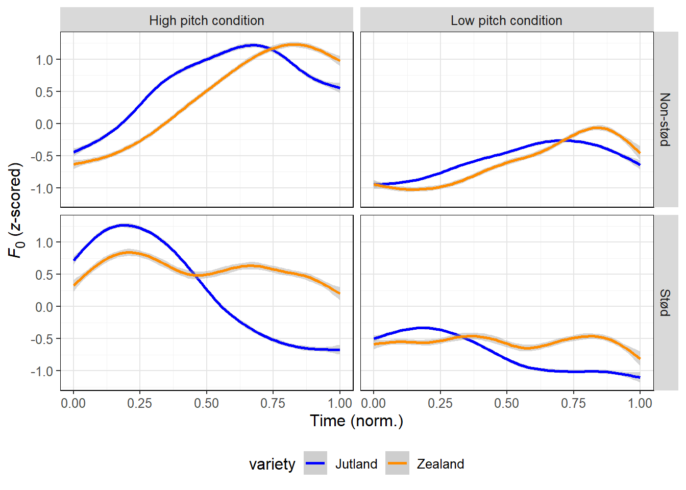
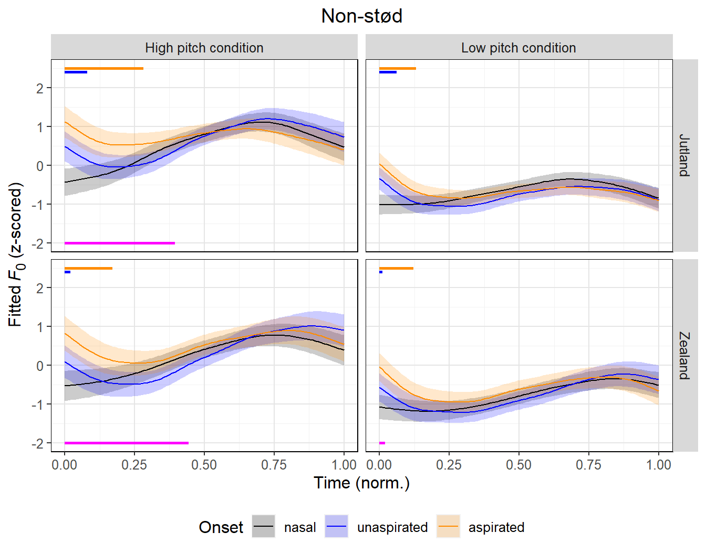

![]()
library(tidyverse)
library(patchwork)
library(eurostat)
geodata <- get_eurostat_geospatial(resolution = '1', nuts_level = 3)Obstruent co-intrinsic pitch and other demands on the larynx
Revisiting the mechanisms behind co-intrinsic pitch in Danish
Abstract
Obstruent consonants often exert a localized influence on pitch level in following segments, such that pitch is higher following phonologically voiceless obstruents. The underlying mechanisms of such co-intrinsic pitch effects remain disputed, and it remains unclear how they interact with other demands on the larynx. We revisit co-intrinsic pitch effects in Danish, a language with two series of voiceless stops that differ in the magnitude and extent of glottal spreading, and accordingly, in the duration of positive voice onset time. Danish is further interesting because it has a phonological voice quality contrast (stød) which places complex demands on the larynx, and there is regional variation in where intonational pitch peaks occur relative to stressed syllables. We elicit alternative question sentences from speakers of two dialects of Danish, which allows us to tease apart how co-intrinsic pitch effects behave when there are multiple series of voiceless stops, when the global pitch target is high versus low, and when there are competing demands on the larynx from a voice quality contrast or a local pitch target. We find that pitch is uniformly raised in both series of stops relative to a neutral baseline, but the duration and magnitude of the effect differs by stop category, suggesting co-intrinsic pitch effects that are scalar rather than categorical. This effect is modulated in complicated ways by other prosodic sources of high pitch, which may be either synergistic or antagonistic to co-intrinsic pitch depending on their phonological source.
1 Introduction
It is well-established that segments may exert a localized influence on pitch, which is superimposed on an overall pitch contour. For example, pitch is higher during high vowels than during low vowels, and pitch is higher immediately following voiceless consonants than during voiced consonants. Co-intrinsic F0 of consonants (which we refer to as CF0 following e.g. Di Cristo & Hirst 1986), i.e. the effect that consonants have on the F0 of surrounding segments, has been documented in many languages with various kinds of laryngeal contrasts in obstruents (e.g. Hombert, Ohala & Ewan 1979). CF0 is assumed to play a major role in tonogenetic sound change processes, where CF0 is often assumed to have transphonologized into lexical tone with concomitant loss of the voiced–voiceless contrast (Hyman 1976; Hombert, Ohala & Ewan 1979).
Despite the substantial body of literature on CF0, several open questions remain about the underlying mechanisms. It remains an open question how exactly CF0 interacts with other more and less localized sources of prosodic modification. It also remains unclear to what extent CF0 is actively controlled or an automatic by-product of e.g. laryngeal gestures aimed at inhibiting or sustaining phonation. If it is primarily the latter, it is still not clear what exactly those gestures might look like. Given that some extent of CF0 appears to be near-universal (Ting et al. 2025) and can demonstrably have crucial downstream consequences for phonological systems, understanding these mechanisms is important for the phonetic sciences and the study of sound change. In this paper, we approach some of these open questions by revisiting CF0 in Danish, where both the prosodic phonology and the laryngeal contrast in stops have properties that make it a suitable language for approaching these questions.
Danish is an interesting case in terms of CF0 for at least the following reasons:
The laryngeal contrast in stops is somewhat unusual, contrasting a series of voiceless aspirated stops [ph th kh] with a series of voiceless unaspirated stops [p t k] (Hutters 1985; Puggaard-Rode, Horslund & Jørgensen 2022). Unlike the corresponding unaspirated stops in most other Germanic languages, the Danish voiceless unaspirated stops are actively devoiced (Beckman, Jessen & Ringen 2013), in the sense that voiceless realizations are the norm even in intervocalic position (Puggaard-Rode, Horslund & Jørgensen 2022), and this is enforced through (light) glottal spreading (Fischer-Jørgensen & Hirose 1974a; Hutters 1985). This makes Danish particularly suitable for testing whether CF0 is caused by active adjustment to enhance a phonological contrast (in which case we would not expect to see pitch raising after the unaspirated stop series), or whether it is caused by gestures inhibiting voicing (in which case we might expect to see pitch raising after both stop series).
The Danish stops have been studied very extensively, both in terms of acoustic realization (Fischer-Jørgensen 1954; Mortensen & Tøndering 2013; Puggaard-Rode 2022; Puggaard-Rode, Horslund & Jørgensen 2022) and physiology, using fiberoptic laryngoscopy (Fischer-Jørgensen 1969; Hutters 1978; 1984; 1985), electromyography (Fischer-Jørgensen & Hirose 1974a; Hutters 1984; 1985), various measures of airflow and air pressure (Fischer-Jørgensen 1969), among others. This allows us to generate particularly concrete hypotheses and to compare the observed CF0 patterns with what is already known about Danish laryngeal articulation.
There is reported regional variation in Danish in the location of the pitch peak relative to stress (e.g. Thorsen & Nielsen 1981; Thorsen 1982; 1988; Grønnum 1989; 1990), making it possible to tease apart the respective influence of focus and high pitch on CF0, by comparing varieties where pitch peak and stress coincide with varieties where they do not.
Danish has a voice quality contrast (known as stød) which is, among other things, cued by pitch differences immediately after an initial consonant (e.g. Petersen 1973; Fischer-Jørgensen 1989; Peña 2022), making it possible to investigate how CF0 interacts with other localized pitch modifications.
CF0 has already been investigated in Danish (Jeel 1975; Petersen 1978a; 1983); these studies suggest that CF0 is indeed found in Danish (although cf. Fischer-Jørgensen 1969), but the studies were not designed with the aforementioned open questions in mind, and thus cannot directly be used to approach them. Perhaps just as importantly, these studies are frequently cited despite being based on limited data and having certain methodological shortcomings by today’s standards, which makes a larger-scale replication study valuable.
Our results show that both series of stops raise F0, although the temporal extent and magnitude of the effect differs between the two series, suggesting that gestures that inhibit voicing exhibit a scalar influence on F0 rather than a categorical one. We find some evidence of global, intonational high pitch targets enhancing CF0, but we also find a tendency for the reverse effect when there are competing phonological demands on the local pitch level. This suggests a complicated relationship between CF0 and macroprosodic demands on pitch that cannot straightforwardly be explained in terms of a single synergistic or antagonistic mechanism.
The following two subsections review the general literature on CF0, especially pertaining to the open questions we are interested in here, and the relevant literature on the Danish laryngeal contrast, regional variability in stress and pitch peak alignment, and the implementation of stød. Our research questions and hypotheses are presented in Section 1.3. Our experimental design, participants, recording methodology, and statistical methodology are presented in Section 2. We present the results of the study in Section 3, and discuss them in light of our research questions and hypotheses in Section 4.
1.1 Co-intrinsic F0
1.1.1 General overview
CF0 was observed as early as the late 19th century by Meyer (1897) and first studied in English by House & Fairbanks (1953). It has been documented in a very wide range of languages (see e.g. the overview in Ting et al. 2025). Some have suggested that F0 is raised following voiceless stops due to gestures that inhibit voicing, such as stiffening or vertical tensing of the vocal folds (Halle & Stevens 1971; Hombert, Ohala & Ewan 1979), in particular tensing of the cricothyroid muscle (Löfqvist et al. 1989; Hoole & Honda 2011), or due to abrupt activity of the vocalis muscle to initiate voicing (Hoole 2006; Hoole & Honda 2011). Others have suggested that F0 is lowered following voiced stops due to gestures that promote closure voicing, such as larynx lowering (e.g. Ewan & Krones 1974; Ewan 1976) with concomitant vocal fold slackening (Ohde 1984; Honda et al. 1999), or that F0 lowering in this context is an active adjustment to perceptually enhance the voicing contrast (Kingston & Diehl 1994; Kingston 2007). Note that these two mechanisms may not be mutually exclusive. When comparing post-stop F0 trajectories to a suitable baseline, CF0 effects in the direction of F0 raising after voiceless stops are typically found to be more temporally extensive than F0 lowering (Hanson 2009). Lowering is often found only during the stop closure itself (Kirby & Ladd 2016), although Maspong, Burroni & Kirby (2024) do find evidence of this effect extending into the initial parts of the vowel in Italian.1 An alternative explanation of CF0 holds that the effects are caused by intraoral air pressure differences after voiced and voiceless stops (e.g. Ladefoged 1967; Ohala 1973; Hombert 1976); this explanation is attractive since it in principle accounts for both F0 lowering and F0 raising, but it arguably fails to predict the scope of F0 modifications, especially that F0 raising can be quite long-lasting (see Hombert, Ohala & Ewan 1979). Such an aerodynamic account would also predict covariation between especially positive voice onset time (pVOT) and the extent of F0 raising, which many studies do not find evidence for (e.g. Dmitrieva et al. 2015; Kirby & Ladd 2016; Pinget & Quené 2023), although cf. Shultz, Francis & Llanos (2012) and Kirby & Ladd (2015).
1 If F0 lowering is found only during the stop closure, this should technically be considered an intrinsic F0 effect (IF0) rather than co-intrinsic, cf. Krug et al. (2021).
2 Swedish is sometimes considered to have an ‘overspecified’ laryngeal contrast between pre-voiced and post-aspirated stops (e.g. Helgason & Ringen 2008; Beckman et al. 2011), but several studies have found the presence of pre-voicing to vary considerably across speakers, items, and utterances (Keating, Linker & Huffman 1983; Sundberg & Lacerda 1999; Lundeborg et al. 2012; Kirby & Tan 2023).
CF0 appears to be relatively independent of how exactly laryngeal contrasts are implemented. The overall effect – namely that F0 is higher following ‘less voiced’ stops than ‘more voiced’ stops (in a very broad sense) – are found in ‘aspiration languages’, where the main cue to the laryngeal contrast is post-aspiration in the voiceless series of stops, such as English (e.g. House & Fairbanks 1953) and German (e.g. Kohler 1982; Kirby, Kleber, et al. 2020), and in ‘true voice languages’, where the main cue to the contrast is the presence of glottal pulsing during the closure in the voiced series of stops, such as Italian (Kirby & Ladd 2015; 2016), French (ibid., Fischer-Jørgensen 1969), Spanish (Dmitrieva et al. 2015), and Dutch (Löfqvist et al. 1989; Pinget & Quené 2023). It is also found in languages which primarily distinguish stops through closure duration, such as Swiss German (Ladd & Schmid 2018; Zebe-Sheng et al. 2025) and Salentino (Burroni, Lau-Preechathammarach & Maspong 2022), and in languages where both pre-voicing and aspiration ostensibly plays a role in the contrast, such as Swedish (Kirby & Tan 2023; although cf. Ting et al. 2025).2 This is less straightforward in languages with more complex laryngeal contrasts. For example, while post-aspiration generally serves to raise F0 in languages with two-way contrasts, it has sometimes been shown to lower F0 in languages which contrast both voicing and aspiration, such as Nepali and Bengali (Clements & Khatiwada 2007; Reetz, Mikuteit & Lahiri 2019).
CF0 effects should be thought of as deviations from an overarching pitch contour, so when studying them, it is crucial to ensure that they are compared to a suitable baseline, and that the prosodic context is controlled. Modally voiced sonorant consonants are not expected to cause F0-perturbations, since their articulatory configuration should not provide any obstructions to airflow, so unlike in e.g. voiced stops (Solé 2018), we have no reasons to expect additional articulatory adjustments to support voicing. For this reason, nasals in particular are often recorded in a comparable context in studies of CF0, and F0 following nasals serves as a baseline condition (e.g. Hanson 2009; Kirby & Ladd 2016; Ladd & Schmid 2018). The prosodic context is typically controlled by having items produced in citation form (e.g. Kirby, Ladd, et al. 2020) or embedding them in a controlled carrier phrase (e.g. Lehiste & Peterson 1961; Silverman 1986; Hanson 2009; Kirby & Ladd 2016; Gao & Arai 2019).
Xu & Xu (2021) further argue that it is important to compare equivalent time points within the syllables of interest, stressing that pitch peaks in intonation contours are not necessarily timed to the onset of voicing after a stop; if pitch peaks are e.g. timed relative to the beginning of the syllable and F0 is compared at voicing onset, it will inevitably result in an overestimation of the temporal extent of CF0 (see also Wong & Xu 2007). Xu & Xu (2021) in fact hypothesize that pitch trajectories are always synchronized to syllables. Due to the potential influence of these timing relationships on the reported results, we discuss this question further in light of the data in Section 2.6.
1.1.2 Interaction with other demands on pitch
Several studies have found that the scope of CF0, in terms of both magnitude and temporal extent, is larger in environments with high pitch, such as when the word in question is uttered in a focus condition (e.g. Kohler 1982; Hanson 2009; Kirby & Ladd 2016). The results of Chen (2011) also suggest that there is synergy between CF0 and other pitch targets in a lexical tone language, viz. Shanghai Chinese: co-intrinsic F0 raising is enhanced in high pitch environments, while co-intrinsic F0 lowering is enhanced in low pitch environments. On the basis of this, she hypothesizes CF0 effects are more prominent when there is congruency between the vocal fold stiffness required by a tonal pitch target and that specified by a consonant. These effects are both strengthened under prosodic focus, which suggests that they may be the result of gestural enhancement.
Compared to languages without lexical tone, the relationship between ‘voicelessness’ and CF0 is less straightforward in languages that have lexical tone. In Shanghai Wu and Shuangfeng Xiang, F0 is generally lowered after post-aspiration (Chen 2011; Shi 2020), whereas in Khmer, Thai, Vietnamese, and Taiwanese, F0 is generally raised after post-aspiration (Lai et al. 2009; Kirby 2018); in all of these languages, the scope of CF0 depends greatly on tonal context, and in other languages such as Mandarin Chinese and Cantonese, even the direction of CF0 can depend on tonal context (e.g. Francis et al. 2006; Shi, Chen & Mous 2020; Guo & Kwon 2022).3 Two plausible reasons for these discrepancies are 1) that post-aspiration can be achieved by different articulatory mechanisms, and 2) that the range of possible CF0 effects are limited when the phonological context places competing demands on the larynx, e.g. to achieve a higher pitch level. As we will see below, Danish is an intriguing case study here, as 1) the articulatory mechanisms that produce post-aspiration are quite well-described, and 2) the voice quality contrast also places certain (very well-described) demands on the larynx with respect to pitch level.
3 Some studies (Xu & Xu 2003; Lo 2022) find that F0 is consistently raised after aspirated stops in Mandarin Chinese.
It is difficult to straightforwardly determine the influence of intonational or non-intonational pitch targets, stress, and focus on CF0, since items of interest are typically elicited in stressed or focused contexts.
Hanson (2009) and Kirby & Ladd (2016) partially evade this problem by designing materials aimed at eliciting focused words in both high and low pitch environments. As we will see below, (variation in) the prosodic phonology of Danish makes it an intriguing case for teasing apart how different sources of high and low pitch affect CF0.
1.2 Previous work on Danish
1.2.1 Laryngeal contrast and CF0
Danish stops display a two-way laryngeal contrast between /b d g/ and /p t k/. In simple onset position before a full vowel, /b d g/ are voiceless unaspirated [p t k] and /p t k/ are voiceless aspirated [ph th kh] (Fischer-Jørgensen 1954). Aspiration-based stop contrasts are the norm in Germanic languages (e.g. Iverson & Salmons 1995), but Danish is unusual in how much closure voicing is repressed in /b d g/. Aspiration is of course regulated with a glottal spreading gesture, but several previous studies have shown that /b d g/ are also produced with a glottal spreading gesture, albeit of a smaller magnitude (Fischer-Jørgensen 1969; Frøkjær-Jensen, Ludvigsen & Rischel 1971; Fischer-Jørgensen & Hirose 1974a; Hutters 1978; 1984; 1985). Electromyographic studies suggest that this gesture is an active adjustment, in the sense that it is accomplished through tensing of the posterior cricoarytenoid muscles (Fischer-Jørgensen & Hirose 1974a; Hutters 1985), and not simply an aerodynamic by-product of the consonant–vowel transition, as originally proposed by Frøkjær-Jensen, Ludvigsen & Rischel (1971). This glottal opening gesture serves to counteract voicing, even in e.g. intervocalic position (Puggaard-Rode, Horslund & Jørgensen 2022). No such gesture is found in English /b d g/ (Sawashima 1970), although a similar gesture is found in Icelandic /b d g/ (Pétursson 1976), where it likely also serves to support devoicing.
The first to touch on CF0 in Danish was Fischer-Jørgensen (1968; 1969). She writes that no such effect is found in Danish, but she does not actually report the results of a CF0 study. The topic was taken up again by Jeel (1975), who measured F0 for 6 speakers reading words with initial stops and other obstruents in identical carrier phrases; for four of these speakers, words with initial sonorants were also recorded. She finds that F0 immediately at the onset of the following vowel is consistently higher after /p t k/ than /b d g/; for those 4 speakers where stops can be compared to a sonorant baseline, the results are somewhat mixed, but F0 is shown to be higher or very similar after /b d/ compared to /m n/. In several cases, the difference between sonorants and unaspirated stops is found to be greater than the difference between unaspirated and aspirated stops.
Petersen (1978a) measured F0 for three speakers reading nonce words of the type [CVˈCVCV] (where V is one of the three corner vowels) embedded in a carrier sentence, reusing materials from a previous study on vowel-intrinsic F0 (Petersen 1978b).4 Only stop-initial words were measured, and due to the nature of the nonce words, the ecological validity of this study is rather low; the study consistently finds higher F0 after /p/ compared to /b/ in the medial stressed syllable, although the magnitude of the effect is frequently quite small. He does not find any consistent differences between /b/ and /p/ in the pretonic and posttonic unstressed syllables. In a later study, Petersen (1983) measured F0 for three speakers reading nonce words of the type [CVˈfi] in a carrier sentence. In this study, stops are compared with sonorants and other obstruents. The results show that F0 is initially raised after /p t k/ compared to /b d g/, and that both series of stops show raised F0 compared to nasals; in fact, the difference between unaspirated stops and nasals is found to initially be a fair bit greater than the difference between the two stop series, but at the end of the syllable, the effect of aspiration is typically greater than the difference between unaspirated stops and nasals. Petersen (1983) compares F0 with measurements of larynx height, showing that there is no straightforward relationship between the two.
4 Petersen (1978b) quite clearly finds the ‘expected’ effect of higher F0 in high vowels compared to low vowels.
Goldstein & Browman (1986) cite both Jeel (1975) and Petersen (1983) in arguing that the laryngeal contrast is phonologically specified with continuous gestural underlying representations, claiming that their framework can account well for the raised F0 of both stop series relative to nasals, and for the difference in F0 between the two stop series. Kingston & Diehl (1994), on the other hand, cite both sources as evidence that Danish /b d g/ are phonologically represented with the distinctive feature [+voice], which acts as an F0 depressor.
1.2.2 Stød production and F0
Standard Copenhagen Danish has a distinctive voice quality typically refered to as stød, which is realized over entire sonorant syllable rhymes (e.g. Grønnum & Basbøll 2007).5 Stød in Copenhagen Standard Danish is generally acknowledged to be biphasic (Smith 1944), where the first phase exhibits raised F0 relative to syllables without stød (e.g. Vihman 1971; Petersen 1973; Peña 2022), and the second phase typically exhibits a drop in F0, a drop in intensity, and creaky, irregular phonation (e.g. Fischer-Jørgensen 1987; 1989; Foget Hansen 2015). While early research suggested that the first phase played little role in the perception of stød (Thorsen 1974), more recent research suggests that the first phase is actually particularly crucial to perceiving the voice quality contrast (Peña 2023), and that words with and without stød are distinguished fairly well based on acoustic cues in the first phase alone (Peña 2024), particularly F0 (Siem 2023a).
5 This section gives an overview of existing literature on the phonetics of stød as pertains to the present study; for a recent extensive general overview, see Grønnum (2023).
Articulatory work shows that the second phase of stød is produced with laryngeal constriction (Esling et al. 2019), in particular contraction of both the ventricular folds and the anterior part of the vocal folds (Fischer-Jørgensen 1987; 1989), leading to a reduced contact quotient between the folds relative to words without stød (Siem 2023a). The first stød phase has further been found to be accompanied by stronger articulation in several ways: compared to syllables without stød, oral airflow is higher (Smith 1944), subglottal air pressure is higher, and the palatal contact area is larger (Fischer-Jørgensen 1987; 1989).
There is substantial regional variation in how stød is realized and how it patterns phonologically in Danish (e.g. Ejskjær 1990; 2006). Most of this variation is not relevant to our purposes here, but it is worth mentioning that stød in Aarhus Danish appears to be predominantly tonal (Kyst 2008); unlike in Standard Copenhagen Danish, syllables with and without stød are poorly distinguished using acoustic measures of spectral slope and harmonics-to-noise ratio, and the contact quotient does not differ (Siem 2023a). There is also a much lower tendency for following syllables to have creaky phonation in Aarhus Danish relative to Standard Copenhagen Danish (Siem 2023b). The pitch pattern in the first phase, however, appears to be essentially the same: F0 at the vocalic onset is higher in syllables with stød, and these syllables display a falling pitch pattern. A very brief overview of relevant parts of Danish geography is given in the next section.
1.2.3 Stress and pitch peak alignment
While Danish has been subject to extensive dialect leveling in the past century or so (e.g. Pedersen 2003), regional varieties still differ in their use of prosodic cues such as the alignment between stress and pitch (Skautrup 1944--1970; Grønnum 1992), and it has been experimentally verified in recent years that these are important cues used by listeners to determine the regional origin of speakers (Kristiansen, Pharao & Maegaard 2013; Tøndering & Pharao 2020). In Standard Copenhagen Danish, stress in disyllabic words without stød is cued with low falling pitch on the tonic syllable and high rising pitch on the post-tonic syllable (e.g. Thorsen 1978; 1979; 1983; Dyhr 1993; Petersen 2001; Tøndering 2008). This is quite unlike in Jutland Danish, where stress is reported to be cued with high rising pitch on the tonic syllable in the absence of stød (e.g. Thorsen & Nielsen 1981; Thorsen 1982; 1988; Grønnum 1989; 1990; Jespersen, Šturm & Hejná 2021).
Denmark can be seen in Figure 1, where the two main dialect areas under consideration in this study are colored in. Jutland is the peninsula in Western Denmark; note that Northern Jutland is not colored and is kept out of this study, because we have reason to believe that the laryngeal contrast in stops may be implemented differently here (see e.g. Puggaard-Rode 2024a). The colored-in island in Eastern Denmark is Zealand.6 Since a few of the speakers recorded for the study are from outside the greater Copenhagen area but distinctly have the stress–pitch peak alignment associated with Standard Copenhagen Danish, we conceptualize this variety instead as Zealand Danish here; see Section 2.2.
6 The smaller islands south of Zealand are in some respects part of the same administative unit as Zealand, but no speakers recorded for this study come from these islands.
Generating maps with
eurostat and ggplot2
The map in Figure 1 is made in R using the packages ggplot2 and eurostat. eurostat has coordinates for the outlines of a bunch of countries and internal administrative areas at various levels of granularity. These coordinates are loaded into R using the get_eurostat_geospatial() function as below.
I set resolution = '1' to get the highest possible resolution. nuts_level refers to the Eurostat NUTS level (nomenclature of territorial units for statistics); this determines the granularity of the regions that the maps are divided into. We use 3 here, because 2 would give us official regions of Denmark, which for various reasons isn’t very useful. It’d actually be nice with an even smaller granularity, but 3 are the smallest available units.
We now downloaded a huge object with small administrative units for all available countries. This can be filtered on a by-country basis by using the CNTR_CODE column in the geodata object.
Here we grab the outlines of Denmark, and also the bordering countries Germany and Sweden.
geodataDK <- geodata[geodata$CNTR_CODE=='DK',]
geodataDE <- geodata[geodata$CNTR_CODE=='DE',]
geodataSE <- geodata[geodata$CNTR_CODE=='SE',]Administrative areas can be filtered by using the NUTS_NAME column in geodata. The available areas in Denmark are the following:
unique(geodataDK$NUTS_NAME) [1] "Nordsjælland" "Bornholm" "Østsjælland"
[4] "Sydjylland" "Vest- og Sydsjælland" "Vestjylland"
[7] "Byen København" "Københavns omegn" "Fyn"
[10] "Nordjylland" "Østjylland" So we can use differential coloring for different areas, we further subdivide geodataDK into relevant parts of Jutland jAreas, Zealand zAreas, and restofDK. (Unfortunately the large area Vest- og Sydsjælland includes Lolland–Falster south of Zealand, but for this study those aren’t actually conceptualized as part of Zealand).
jAreas <- c('Sydjylland', 'Vestjylland', 'Østjylland')
jutland <- geodataDK[geodataDK$NUTS_NAME %in% jAreas,]
zAreas <- c('Nordsjælland', 'Østsjælland', 'Vest- og Sydsjælland',
'Byen København', 'Københavns omegn')
zealand <- geodataDK[geodataDK$NUTS_NAME %in% zAreas,]
restofDK <- geodataDK[!geodataDK$NUTS_NAME %in% c(jAreas, zAreas),]The figure is now a ggplot object which makes heavy use of the non-standard geom_sf class. We can use those because geodata and the derived objects are not traditional data frames:
class(geodata)[1] "sf" "tbl_df" "tbl" "data.frame"The sf object class (for geospatial data) makes it possible to store complex numeric vectors in something like a data frame cell, and these can then be plotted as polygons with ggplot() using the geom_sf() function. For the map, we create a blank plotting area with a light blue background (for the ocean!), color in the areas that we’ve filtered out above differentially, and embellish the plot using regular geographical coordinates.
mapDK <- ggplot() +
geom_sf(data=jutland, fill='wheat') +
geom_sf(data=zealand, fill='thistle1') +
geom_sf(data=restofDK, fill='lightgrey') +
geom_sf(data=geodataDE, fill='lightgrey') +
geom_sf(data=geodataSE, fill='lightgrey') +
annotate(geom='point', x=12.3, y=55.4, size=4, col='red') +
annotate(geom='label', x=12.3, y=55.1, label='Copenhagen\n(Zealand)') +
annotate(geom='point', x=10.2, y=56.1, size=4, col='red') +
annotate(geom='label', x=10.2, y=55.8, label='Aarhus\n(Jutland)') +
xlim(8, 13) +
ylim(54.7, 58) +
theme_bw() +
theme(panel.background=element_rect(fill='lightblue'),
panel.border=element_blank(),
panel.grid.major=element_blank(),
panel.grid.minor=element_blank(),
axis.text.y=element_blank(),
axis.text.x=element_blank(),
axis.title.y=element_blank(),
axis.title.x=element_blank(),
axis.ticks=element_blank())Code
mapDKThis particular pattern of variation should give rise to a unique opportunity to tease apart the influences of focus and pitch on CF0. If the previous findings of more extensive CF0 under focus are actually due to synergistic effects of multiple sources of pitch raising (rather than due to focus), we should find stronger CF0 effects in Jutland Danish compared to Zealand Danish, at least in syllables without stød, since the focused syllable should co-occur with a pitch peak in Jutland Danish but not in Zealand Danish. However, for reasons which are not entirely clear to us, our speaker sample from Jutland did not display the stress–pitch alignment pattern previously reported in the literature. Speakers from Jutland and Zealand differ in that the pitch peak of Zealand speakers is later, higher, and follows a steeper rise, but the pitch peak of Jutland speakers is rather later than expected, meaning that CF0 effects do not co-occur exactly with the pitch peak in either group. We discuss this further in Section 3.1. This necessarily means that our discussion of regional differences in CF0 is somewhat more exploratory than originally planned.
1.3 Research questions
RQ1: What will CF0 look like in a language which contrasts two series of actively devoiced stops? While this has already been tested by Jeel (1975) and Petersen (1983) in highly controlled laboratory speech (see Section 1.2.1), it is unclear whether their results will replicate in a larger, more naturalistic study, especially given that the Danish findings conflict with some of the theoretical predictions in the broader CF0 literature (see Section 1.1.1).
- H1a: F0 is raised after both stop series, since both stop series are actively devoiced. The F0 levels following consonants would then be ranked either /p ~ b/ > /m/ or /p/ > /b/ > /m/, depending on whether the magnitude of devoicing gestures is expected to have an observable influence on CF0. The latter option would be in line with the results of Petersen (1983).
- H1b: /b d g/ are underlyingly represented as [+voice], which acts as an F0 depressor even if the stops are phonetically voiceless, and the F0 levels following consonants is ranked /p ~ m/ > /b/.7
- H1c: F0 is raised after /p t k/, since this is often found after the ‘less voiced’ series of stops in languages with two-way contrasts, regardless of how the contrast is otherwise realized, and the F0 levels following consonants is ranked /p/ > /b ~ m/.
7 This assumes that nasals are unmarked for the feature [voice], following e.g. Lombardi (1995) and Strycharczuk (2012).
8 Note that these hypotheses assume that there is no lowering effect of stops with a proposed [+voice] specification in Danish, i.e. that H1b is false; the previous research, including the results of Petersen (1983), generally leads us to expect this.
RQ2: How do focus, global pitch level, and local pitch peak location respectively affect CF0?8 (cp. Section 1.1.2 and Section 1.2.3). The hypotheses below are not necessarily mutually exclusive.
- H2a: CF0 is enhanced in words with high pitch targets in speakers from both Jutland and Zealand, suggesting that the global pitch target affects CF0 but the differences in implementation of the high pitch target in the two varieties are insufficient to affect CF0.
- H2b: CF0 is generally enhanced in speakers from Jutland relative to speakers from Zealand in a high pitch environment. This would suggest that CF0 effects are modulated by their proximity to a local high pitch target, which is closer to the vowel onset in the speakers from Jutland.
RQ3: Do lexical demands on pitch level (specifically the stød contrast) affect CF0? (cp. Section 1.1.2 and Section 1.2.2)
- H3a: The magnitude of CF0 is greater in syllables with stød relative to syllables without stød, i.e. CF0 strengthens when pitch is high, regardless of the source of high pitch.
- H3b: There is attrition of CF0 in syllables with stød, since the competing demands on the vocal folds allows for less modulation of F0.
- H3c: CF0 is not affected by the stød contrast either way.
2 Methods and materials
2.1 Speech materials
We constructed 132 alternative question sentences of the form Er det dine eller er det mine? ‘Are they yours or are they mine?’. Following Kirby & Ladd (2016), this sentence structure was intended to prompt a high pitch reading of the first alternative (in this case dine) and a low pitch reading of the second alternative (in this case mine). All items of interest occur in both high and low position. The items of interest were crossed to contain all possible combinations of the following variable levels in the stressed syllable:
- onset category: nasal, unaspirated, aspirated
- place of articulation: bilabial, alveolar
- vowel height: high, low
- stød: present, absent
The test items all have phonologically long vowels in the stressed syllable.9 Most items were disyllabic with stress on the first syllable; a few were trisyllabic, with stress either on the second or the first syllable. For processing purposes, trisyllabic items with stress on the first syllable were analyzed in full, whereas the first syllable (typically a prefix) was ignored in trisyllabic items with stress on the second syllable.
9 Some speakers have short vowels in the possessive pronouns dine ‘yours’ and mine ‘mine’; this is apparently due to a relatively recent change in Zealand Danish (Schachtenhaufen, Ipsen & Fabrin 2024).
Alternative question sentences were constructed around the test words. Most items contained only one item of interest, in order to ensure that the sentence sounded relatively pragmatically natural, but when feasible, sentences contained two items of interest. The full list of sentences is in the supplementary materials published through the Open Science Framework (DOI: 10.17605/OSF.IO/67SHC).
A closer look at the speech materials
The prompts are stored in a comma-separated file. I’ll load them in as master here:
master <- read.csv('data/master.csv')This file serves as a look-up table for later data analysis. It has the following columns:
filenamegives the file name associated with each sentencesentencegives the sentence orthographicallyfoc.itemgives the focused word orthographicallyfoc.moagives the manner or laryngeal category of the initial consonant of the focused word, eitherunasp,asp, ornasalfoc.poagives the place of articulation of the initial consonant of the focused word, eitheralvorbilabfoc.vheightgives the height of the stressed vowel of the focused word, eitherhighorlowfoc.creakgives the voice quality of the focused word, eitherst(stød) ornst(non-stød)- Finally, there are five columns starting with
nfocwhich give the same values for the word not in focus
All values of the foc columns are NA if the focused word is not being analyzed, and same for the nfoc columns. The data frame has 137 columns because the first 5 sentences are used to accommodate the speakers to the experimental setup, and are not analyzed. The file names of these are training1, training2, etc.
You can have a look the data frame here:
master %>% DT::datatable()2.2 Participants
31 speakers of Danish were recorded for the study. Participants were either undergraduate students in linguistics at the University of Copenhagen, or recruited in Aarhus from the extended network of the first author. Several participants had some phonetic training. Participants self-reported their variety of Danish, year of birth, and gender. We explicitly looked for speakers from either Zealand or Jutland, excluding speakers from Northern Jutland (see Section 1.2.3). Speakers were subsequently categorized as speakers of either Jutland Danish (n = 17) or Zealand Danish (n = 12); two speakers were excluded from the analysis, as they were late bilinguals with a different first language. The Jutland Danish speakers were predominantly from Eastern Jutland near Aarhus (see Figure 1), but a few came from Central Jutland and Southern Jutland. The Zealand Danish speakers were predominantly from the greater Copenhagen area, although a few came from other places in Zealand. Two participants reported having a bidialectal upbringing; since variation in stress–pitch peak alignment was our reason for this categorization, and both speakers could straightforwardly be assigned to one of these two categories, we include these speakers in the final results. Participants were between 19–34 years old at the time of recording. 19 participants were female, 9 were male, and one was non-binary.
2.3 Recording procedure
Recordings were made in sound-attenuated booths at the University of Copenhagen or Aarhus University. Participants provided demographic information as outlined in the previous section, and signed informed consent forms. The recordings made in Copenhagen were self-supervised after instructions by the third author as part of a course in acoustic phonetics; the recordings made in Aarhus were supervised by the first author. Speakers were seated in front of an omnidirectional microphone (AKG P420 through a Zoom H5 in Aarhus; Sennheiser MKH40 in Copenhagen). Sentence prompts appeared on a computer screen, and speakers were instructed to read as colloquially as possible, and at a natural pace. The first 5 sentences were trial items not used in the analysis, in order to allow speakers to accomodate to the recording device. Sentences were pseudo-randomized, and there was a break in the middle of the recording session. Recordings were made direct to disk at a 44.1 kHz sampling rate using SpeechRecorder, version 6.8.5 (Draxler & Jänsch 2004).
2.4 Pre-processing and annotation
Pre-processing, acoustic analysis, and statistical analysis was predominantly done in R (R Core Team 2023). For each speaker, all recordings were concatenated to a single sound file using the tuneR library (Ligges 2023), and sentence-level orthographic annotations were automatically generated in the Praat TextGrid format (Boersma 2001) using the rPraat library (Bořil & Skarnitzl 2016). Recordings were then force-aligned using the DanFA module of the Autophon tool (Young 2023; Young & McGarrah 2023; Young & Anikwe 2024), which implements the Montreal Forced Aligner (McAuliffe et al. 2017) with a series of pre- and post-processing steps. The force-aligned annotations were split to match the original audio files, and the resulting pairs of audio and annotation files were then converted to an EMU-SDMS database. Subsequent work with the files was done using the emuR interface (Winkelmann, Harrington & Jänsch 2017).
Preparing files for forced alignment and creating EMU-SDMS database
For each speaker, concatenated sound files and sentence-level annotations are created using the following custom function make_master_wav_tg() which takes a single argument, sp, which is the identifier for the speaker.
The function matches the name of each audio file with the filename column in the master data frame we saw earlier, and grabs the corresponding orthography of the sentence.
Sound files are read in using the readWave() function from the tuneR library and converted to mono using the mono() function, and the signals are concatenated using the bind() function. These resulting Wave objects are of the S4 class, so contents are accessed with the @ operator. The signal of a mono audio file is stored in @left, where each sample is an integer between -32,767 and 32,767, corresponding to the 16 bit depth resolution of 65,536 possible amplitude values. For whatever reason, the above operation sometimes results in values above 32,767, which we just convert to 32,767 to ensure that tuneR is happy. The sound file is then saved using the writeWave() function.
As part of this loop, we also grab the durations of the sound files (by comparing the number of samples with the sampling rate stored in @samp.rate of the Wave objects) and store them in the vectors t1 and t2. We create a TextGrid object from scratch using the tg.createNewTextGrid() function from the rPraat library. We add a tier with the tg.insertNewIntervalTier() function, and add intervals with the orthography for each sentence to the times in t1 and t2 using the tg.addInterval() function. We save this as a proper TextGrid with the tg.write() function. Here it’s important to remember to set format='text'; the default format 'short' can create a bunch of issues.
(This code isn’t actually being run as part of knitting this document, this is just to show what the procedure looks like.)
library(tuneR)
library(rPraat)
library(emuR)
make_master_wav_tg <- function(sp) {
data_loc <- paste0('../data/', sp, '/')
wavs <- list.files(data_loc, pattern='*.wav')
base_fn <- wavs[1] %>% str_sub(start=5, end=-5)
snd <- readWave(paste0(data_loc, wavs[1])) %>% mono
dur <- length(snd@left)/snd@samp.rate
t1 <- 0
t2 <- dur
ort <- master$sentence[which(master$filename==base_fn)]
for (w in 2:length(wavs)) {
base_fn <- wavs[w] %>% str_sub(start=5, end=-5)
tmp <- readWave(paste0(data_loc, wavs[w])) %>% mono
dur <- length(tmp@left)/tmp@samp.rate
t1 <- c(t1, tail(t2, n=1))
t2 <- c(t2, tail(t1, n=1)+dur)
ort <- c(ort, master$sentence[which(master$filename==base_fn)])
snd <- tuneR::bind(snd, tmp)
}
clip <- which(snd@left > 32767)
snd@left[clip] <- 32767
tg <- tg.createNewTextGrid(tMin=0, tMax=(length(snd@left)/snd@samp.rate)+1)
tg <- tg.insertNewIntervalTier(tg, newTierName='ort')
for (l in 1:length(ort)) {
tg <- tg.insertInterval(tg, 'ort', tStart=t1[l], tEnd=t2[l], label=ort[l])
}
writeWave(snd, paste0(sp, 'concat.wav'))
tg.write(tg, paste0(sp, 'concat.TextGrid'), format='text')
}We then loop through all speakers and run this function like so:
d <- list.dirs('../data') %>% str_replace_all('../data/', '')
for (sp in d) make_master_wav_tg(sp)Once the files are all force-aligned, we use the custom function split_tg_wav() to split the resulting TextGrids into separate files for each original sound file. This is again done with reference to the master data frame, although the output file of the forced aligner has removed all capitalization and punctuation, so this requires some string manipulation. We read in the final TextGrid using the tg.read(), and cut it up using the tg.cut0() function.
(The reason for this circus of concatenating and splitting files is that the Autophon forced aligner – at least when we force-aligned these files – required files to be uploaded individually, which would have been a gargantuan task for the thousands of short sound files we have here, while the EMU-SDMS works best with short files.)
split_tg_wav <- function(sp) {
sp_dir <- paste0('tg_proc/', sp)
dir.create(sp_dir)
tg <- tg.read(paste0('../data/', sp, '.TextGrid'))
len <- length(tg$trans$t1)
t1 <- tg$trans$t1[-len]
t2 <- tg$trans$t2[-len]
sentences <- str_replace_all(master$sentence, '[?]', '') %>% tolower
labs <- str_replace_all(tg$trans$label, '[?]', '')
for (i in 1:(len-1)) {
tg_sub <- tg.cut0(tg, t1[i], t2[i])
id <- which(sentences==labs[i])
base_fn <- master$filename[id]
fn_tg <- paste0(sp, base_fn, '.TextGrid')
tg.write(tg_sub, paste0(sp_dir, '/', fn_tg), 'text')
}
}And again, we repeat this step for each speaker.
for (sp in d) split_tg_wav(sp)We’re now ready to convert the sounds to an EMU database, which we do with the convert_TextGridCollection() function from the emuR library.
convert_TextGridCollection(dir='tg_proc', dbName='cf0dan',
targetDir='.')You can now load the database with the load_emuDB() function. and have a look at it in a browser window using the serve() function:
db <- load_emuDB('../final_emuDB', verbose = FALSE)You can have a look at the data base in a browser window using the serve() function:
serve(db, useViewer=FALSE)A major advantage of using the EMU-SDMS is that annotations can be hierarchical. In Praat, the different TextGrid tiers are totally unaware of each other’s existence, but in EMU, annotation levels can be linked, which makes it easy to fx find all [k]s occuring in the word can’t.
We add the first hierarchical layer to our annotations by creating a so-called ‘one-to-many’ connection between the word and phone annotation levels using the add_linkDefinition() function, and then we automatically create links between words and phones using the autobuild_linkFromTimes() function.
add_linkDefinition(db, type='ONE_TO_MANY',
superlevelName='word', sublevelName='phone')
autobuild_linkFromTimes(db, superlevelName='word',
sublevelName='phone', convertSuperlevel=TRUE)For more information on emuR, see this in-progress tutorial.
In order to more precisely delimit the locations of stops, we used the getVOT library (Puggaard-Rode 2023) to annotate landmarks associated with pVOT. Prior to this, a bandpass filter was applied with cut-off frequencies of 50 Hz (abrupt) and 10,000 Hz (with a 100 Hz smooth Gaussian filter) using the soundgen library to eliminate an occasional low-frequency rumble and speed up the process. getVOT is a simple utility that automatically searches for those landmarks in the speech signal that are typically manually annotated from inspecting the waveform: a sudden amplitude peak after a period of silence corresponding to the beginning of the release, and the onset of periodicity (operationalized here as increased autocorrelation of the signal) corresponding to the onset of voicing. There are multiple parameters that can be toggled to improve results, but getVOT has a function for automatically estimating optimal parameters from a few (typically less than 10) representative hand-annotated tokens. getVOT may not be as precise as more sophisticated tools such as AutoVOT (Sonderegger & Keshet 2012) or Dr.VOT (Shrem, Goldrick & Keshet 2019), but it has the advantage of being very easy to set up and run, and of interacting directly with EMU-SDMS.
Predicting voice onset time landmarks
We use the getVOT library to automatically predict voice onset time related landmarks. getVOT is available from GitHub, and can be installed using the install_github() function from the devtools library:
library(devtools)
install_github('rpuggaardrode/getVOT')getVOT in its current stage is quite sensitive to a low frequency rumble, so before using it we bandpass filter the files using the bandpass() function from the soundgen library in a loop. bandpass takes the arguments lwr and upr for the frequency ranges to pass to keep, and the bw argument that specifies the bandwidth of a Gaussian filter. This can be a vector, if different bandwidths should be used for the lower and upper ranges. By passing the vector c(0,100) we specify an abrupt cut-off at the lower range, but a 100 smooth filter at the upper range. This is done in a custom function clean_audio(), which also rounds the resulting signal vector to integers and rescales and normalizes the values to match the 16-bit depth using the normalize() function in tuneR. Files are then overwritten.
We do this by setting the working directory to the location of our EMU database, and then running the following code:
library(soundgen)
wavs <- list.files(pattern='*.wav', recursive=TRUE)
clean_audio <- function(file) {
snd <- readWave(file)
filt <- bandpass(snd, lwr=50, upr=10000, bw=c(0,100))
snd@left <- round(filt, 0)
snd <- snd %>% normalize(unit='16')
writeWave(snd, file, extensible=FALSE)
}
for (w in wavs) clean_audio(w)In order to predict voice onset time landmarks, we first need a list of words of interest to make sure that landmarks aren’t predicted for all stops in the data. We take these from the master data frame, ignoring the nasal-initial stops and doing a bit of data wrangling to make sure that the strings exactly match the file names (which are not fully orthographic to avoid the Danish-specific letters æ, ø, å).
stop_items <- master %>%
filter(foc.moa %in% c('asp', 'unasp')) %>%
pull(foc.item) %>%
data.frame(ort = .) %>%
mutate(fn = str_replace_all(ort, c('æ' = 'E', 'ø' = 'OE', 'å' = 'O')),
ort = tolower(ort))We can now use the query() function in emuR() to find all matches for these words in our database. getVOT will later search for VOT landmarks only in these intervals.
sl <- query(db, paste0('word-autobuildBackup == ', paste(stop_items$ort, collapse='|')),
timeRefSegmentLevel = 'phone')
sl %>% head(n=5)| labels | start | end | db_uuid | session | bundle | start_item_id | end_item_id | level | attribute | start_item_seq_idx | end_item_seq_idx | type | sample_start | sample_end | sample_rate |
|---|---|---|---|---|---|---|---|---|---|---|---|---|---|---|---|
| dine | 1622.823 | 1907.948 | 0a27a053-4e30-4c3a-a828-6309d062e4d7 | __0003 | 003dine-unasp-alv-high-nst-mine-nasal-bilab-high-nst | 27 | 27 | word-autobuildBackup | word-autobuildBackup | 6 | 6 | ITEM | 71567 | 84140 | 44100 |
| dine | 2629.921 | 3039.921 | 0a27a053-4e30-4c3a-a828-6309d062e4d7 | __0003 | 003mine-nasal-bilab-high-nst-dine-unasp-alv-high-nst | 28 | 28 | word-autobuildBackup | word-autobuildBackup | 9 | 9 | ITEM | 115980 | 134060 | 44100 |
| dine | 1310.714 | 1768.741 | 0a27a053-4e30-4c3a-a828-6309d062e4d7 | __0004 | 004dine-unasp-alv-high-nst-mine-nasal-bilab-high-nst | 25 | 25 | word-autobuildBackup | word-autobuildBackup | 5 | 5 | ITEM | 57803 | 78001 | 44100 |
| dine | 2269.966 | 2622.256 | 0a27a053-4e30-4c3a-a828-6309d062e4d7 | __0004 | 004mine-nasal-bilab-high-nst-dine-unasp-alv-high-nst | 27 | 27 | word-autobuildBackup | word-autobuildBackup | 8 | 8 | ITEM | 100106 | 115641 | 44100 |
| dine | 2986.429 | 3329.898 | 0a27a053-4e30-4c3a-a828-6309d062e4d7 | __0005 | 005dine-unasp-alv-high-nst-mine-nasal-bilab-high-nst | 24 | 24 | word-autobuildBackup | word-autobuildBackup | 4 | 4 | ITEM | 131702 | 146848 | 44100 |
In order to get a reasonable performance from getVOT, we’ve hand annotated the release and voicing onset of eight stop tokens. We can use that to estimate the best performing set of getVOT parameters, using the pos_setParams() function (pos because it’s positive voice onset time). The hand-labeled tokens are in the getVOT_training directory. This function will spit out some text indicating its progress and indicating how closely the predicted VOT landmarks with the selected parameters match the hand-annotations. It will also spit out a plot comparing the the predictions with optimal parameters (red lines) to the hand-annotations (blue lines); if only blue lines are visible, it’s because the predictions are very close to exactly matching the hand-annotations. Here we set the argument cat=TRUE, so that a picture of a cat is plotted along with the results. If you’re a cat-hating monster you can use cat=FALSE instead.
library(getVOT)
params <- pos_setParams('data/getVOT_training', cat=TRUE)[1] "Testing burst detection parameter settings for b1.wav"
[1] "Testing burst detection parameter settings for b2.wav"
[1] "Testing burst detection parameter settings for d1.wav"
[1] "Testing burst detection parameter settings for d2.wav"
[1] "Testing burst detection parameter settings for p1.wav"
[1] "Testing burst detection parameter settings for p2.wav"
[1] "Testing burst detection parameter settings for t1.wav"
[1] "Testing burst detection parameter settings for t2.wav"
[1] "On average, the selected burst detection parameters after a first pass agree with the training data within a margin of 0.589 ms"
[1] "Finetuning burst detection parameter settings for b1.wav"
[1] "Finetuning burst detection parameter settings for b2.wav"
[1] "Finetuning burst detection parameter settings for d1.wav"
[1] "Finetuning burst detection parameter settings for d2.wav"
[1] "Finetuning burst detection parameter settings for p1.wav"
[1] "Finetuning burst detection parameter settings for p2.wav"
[1] "Finetuning burst detection parameter settings for t1.wav"
[1] "Finetuning burst detection parameter settings for t2.wav"
[1] "On average, the selected burst detection parameters after finetuning agree with the training data within a margin of 0.386 ms"
[1] "Testing voicing onset parameter settings for b1.wav"
[1] "Testing voicing onset parameter settings for b2.wav"
[1] "Testing voicing onset parameter settings for d1.wav"
[1] "Testing voicing onset parameter settings for d2.wav"
[1] "Testing voicing onset parameter settings for p1.wav"
[1] "Testing voicing onset parameter settings for p2.wav"
[1] "Testing voicing onset parameter settings for t1.wav"
[1] "Testing voicing onset parameter settings for t2.wav"
[1] "On average, the selected voicing onset parameters after a first pass agree with the training data within a margin of 4.247 ms"
[1] "Finetuning voicing onset parameter settings for b1.wav"
[1] "Finetuning voicing onset parameter settings for b2.wav"
[1] "Finetuning voicing onset parameter settings for d1.wav"
[1] "Finetuning voicing onset parameter settings for d2.wav"
[1] "Finetuning voicing onset parameter settings for p1.wav"
[1] "Finetuning voicing onset parameter settings for p2.wav"
[1] "Finetuning voicing onset parameter settings for t1.wav"
[1] "Finetuning voicing onset parameter settings for t2.wav"
[1] "On average, the selected voicing onset parameters after finetuning agree with the training data within a margin of 3.547 ms"
The resulting object is a list that looks like this:
params$closure_interval
[1] 16
$vo_granularity
[1] 0.8
$vo_param
[1] 0.87
$rel_method
[1] "diff"
$release_param
[1] 21
$f0_first
[1] FALSE
$vo_method
[1] "acf"
$f0_wl
NULL
$f0_minacf
NULL
$zcr_min
[1] NA
$soe_min
[1] NAFor more information about what all this means, see this extended overview.
We can estimate VOT landmarks for our selected words and add them directly to the EMU database as a new annotation level using the function addVOT2emuDB(). We pass the params object to the pos_params_list argument.
addVOT2emuDB(db, sl, level='word', sign='positive', pos_params_list=params)Finally, all relevant boundaries – i.e., the beginning of the closure, the end of the closure, the end of the word, and onset of voicing after /b d p t/ – were manually checked and adjusted when necessary, based primarily on visual inspection of the waveform. Examples of the resulting annotations for each segment category can be seen in Figure 2, where clo indicates the beginning of the closure, rel indicates the release, vo indicates the voicing onset, and offset indicates the end of the word.
Code
library(praatpicture)
emupicture(db, session = '__0004',
bundle = '004Nilen-nasal-alv-high-st-NA-NA-NA-NA-NA',
start = 2, end = 2.65, spec_freqRange = c(0, 6000),
tg_tiers = 'landmarks', tg_focusTierLineType = 'solid',
tg_focusTierColor = 'blue', tg_tierNames = F,
proportion = c(3, 5, 1),
mainTitleAlignment = 0.5, mainTitle = 'Nilen [ˈniːˀln̩]')
emupicture(db, session = '__0004',
bundle = '004bilen-unasp-bilab-high-st-NA-NA-NA-NA-NA',
start = 2.4, end = 2.95, spec_freqRange = c(0, 6000),
tg_tiers = 'landmarks', tg_focusTierLineType = 'solid',
tg_focusTierColor = 'blue', tg_tierNames = F,
proportion = c(3, 5, 1),
mainTitleAlignment = 0.5, mainTitle = 'bilen [ˈpiːˀln̩]')
emupicture(db, session = '__0004',
bundle = '004pilen-asp-bilab-high-st-NA-NA-NA-NA-NA',
start = 1.4, end = 2.15, spec_freqRange = c(0, 6000),
tg_tiers = 'landmarks', tg_focusTierLineType = 'solid',
tg_focusTierColor = 'blue', tg_tierNames = F,
proportion = c(3, 5, 1),
mainTitleAlignment = 0.5, mainTitle = 'pilen [ˈpʰiːˀln̩]')praatpicture library (Puggaard-Rode 2024b).
Creating annotation level with stop landmarks
After we’ve manually checked all annotations, we want to have a new convenient annotation level that has the same landmarks for all stop consonants, including the nasals. We’ll add this new annotation level, called landmarks using the add_levelDefinition() function. The type='EVENT' specification is equivalent to creating a point tier in Praat.
add_levelDefinition(db, 'landmarks', type='EVENT')Here, we want to add specific points in time for the closure, release, voicing onset (not relevant for nasals), and word offset. It is a bit of a hassle to automatically create annotations in EMU, but there is a function create_itemsInLevel() that does it. This function requires a data frame of a specific format though. The custom function populate_landmarks() will take care of this formatting:
populate_landmarks <- function(seg_list, start, lab) {
itc <- data.frame(session = seg_list[['session']],
bundle = seg_list[['bundle']],
level = rep('landmarks', nrow(seg_list)),
start = seg_list[[start]] /
seg_list[1,'sample_rate'] * 1000,
labels = rep(lab, nrow(seg_list)),
db_uuid = db$UUID)
return(itc)
}populate_landmarks() takes as arguments a segment list created with the query() function, a column with start times from that segment list, and labels to repeat for that segment list.
To get the times for the beginning of the closure and the word offset for oral stops, we can use the segment list sl that we already created above:
clo <- populate_landmarks(sl, 'sample_start', 'clo')
offset <- populate_landmarks(sl, 'sample_end', 'offset')To get the times for release and voicing onset, we query() the annotation level vot.
sl_vot <- query(db, 'vot == vot')
rel <- populate_landmarks(sl_vot, 'sample_start', 'rel')
vo <- populate_landmarks(sl_vot, 'sample_end', 'vo')To get similar information about nasals, we need to create a segment list with only the nasals. We do this in the same way as we previously did with stops when making the sl list.
nas_items <- master %>%
filter(foc.moa == 'nasal') %>%
pull(foc.item) %>%
data.frame(ort = .) %>%
mutate(fn = str_replace_all(ort, c('æ' = 'E', 'ø' = 'OE', 'å' = 'O')),
ort = tolower(ort))
nas_ort <- paste(nas_items$ort, collapse='|')
sl_nas <- query(db, paste0('word == ', nas_ort),
timeRefSegmentLevel='phone') %>%
distinct(.keep_all=TRUE)Using this information, we can get all the word offset times:
offset_nas <- populate_landmarks(sl_nas, 'sample_end', 'offset')We don’t have the nasal segment information we need yet. To get that, we need some more complex queries (more on that here).
q1 <- paste0('[#phone == m|n & Start(word,phone) == TRUE ^ word == ',
nas_ort, ']')
q2 <- '[#phone == n & End(word,phone) == FALSE ^ word == fornyet|forneden]'
sl_nasSeg <- rbind(
query(db, q1),
query(db, q2)
)
clo_nas <- populate_landmarks(sl_nasSeg, 'sample_start', 'clo')
rel_nas <- populate_landmarks(sl_nasSeg, 'sample_end', 'clo')We can now combine all of the data frames we just made, and pass them on to the create_itemsInLevel() function:
itc <- rbind(clo, rel, vo, offset, clo_nas, rel_nas, offset_nas)
create_itemsInLevel(db, itc)2.5 Acoustic analysis
Durational measures, such as closure duration and pVOT,10 are straightforwardly extracted from the annotations described above.
10 When stops appeared immediately after a sonorant, voicing typically `bled’ into the initial portion of the stop closure (see Davidson 2016). We did not, however, find any cases of stops with fully voiced closure; following Puggaard-Rode, Horslund & Jørgensen (2022), this is expected to be exceedingly rare in stressed syllables.
In order to only include pitch measures that we were reasonably certain about, we calculated pitch using a cross-validation method with two distinct pitch tracking algorithms, viz. Praat and REAPER. Pitch was calculated using Boersma’s (1993) autocorrelation algorithm in Praat, using the emuhelpeR library (Puggaard-Rode 2024c) to access the PraatSauce scripts (Kirby 2020) and import the results into EMU-SDMS. Additionally, pitch was calculated using Talkin’s (2015) REAPER (robust epoch and pitch estimator) algorithm, which first estimates the candidates for the locations of glottal closure instances, and then defines pitch as the distance between “winning candidates” (determined through a dynamic programming procedure). REAPER has been shown to perform particularly well for pathological and creaky speech (Vaysse, Astésano & Farinas 2022; White et al. 2022), which is highly relevant here since we measure syllables with stød. A set of custom functions in R were used to call the REAPER utility and import the results into EMU-SDMS.
With both Praat and REAPER, we used the two-pass pitch estimation procedure proposed by Hirst (2007) to dynamically estimate suitable pitch floor and ceiling values. This involves first running the algorithms with very liberal pitch floor and ceiling values of 60 Hz and 700 Hz respectively (following recommendations by Hirst & De Looze 2022). For each speaker, quartiles \(Q_n\) are calculated from all resulting pitch values, and the algorithms are rerun where the pitch floor is set to \(\frac{3}{4}Q_1\) and the pitch ceiling is set to \(1\frac{1}{2}Q_3\). This method reduces pitch tracking errors close to the edges of a speaker’s register (De Looze 2010). Any F0 measures that fall outside of three standard deviations of a speaker’s mean is treated as a missing value.
Extracting pitch with Praat
Praat’s pitch tracking algorithm is used via the emuhelpeR library, available from GitHub.
install_github('rpuggaardrode/emuhelpeR')
library(emuhelpeR)We set the directory with folders of raw data as the working directory, and then call the function run_ps_dynamic_minmax(), which will calculate pitch twice for each speaker, once to get range estimates for setting the pitch floor and ceiling, and once with suitable floor and ceiling.
ps_out <- run_ps_dynamic_minmax(getwd(),
formantMeasures = FALSE,
spectralMeasures = FALSE)A bit of wrangling to get the format of the resulting data frame just right:
ps_out <- ps_out %>% mutate(
session = str_sub(Filename, end=3)
) %>% relocate(session, .after=Label) %>%
mutate(seg_Start = as.numeric(seg_Start),
session = paste0('_', session))And then we incorporate the values into the EMU database using the praatsauce2ssff() function:
ps_out %>% praatsauce2ssff(db, 'session')
Extracting pitch with REAPER
I have bundled up some functions for working with REAPER in R as the library reapeR. It has so far only been tested on Windows, so I can’t make promises about how well it’ll function with other operating systems.
The library can be installed from GitHub like so:
devtools::install_github('rpuggaardrode/reapeR')If you just installed this, it’s recommended that you restart your R session before loading it.
This library has the function reaper_bulk() which has all the functionality we need built in: it’ll interface directly with a loaded EMU database, and it the two-pass pitch floor and ceiling estimation is automated. We run it like this:
library(reapeR)
reaper_out <- reaper_bulk(db, output = 'pitch', hirst2pass = TRUE)We can add the resulting measurements to our EMU database with the function reaper2ssff():
reaper2ssff(reaper_out, db)To cross-validate the resulting pitch measures, we analyze only measurements from frames where both trackers successfully estimated pitch, and where the estimates are no further than 20% apart. For the remaining frames, we analyze the arithmetic mean of the two pitch estimates. Prior to analysis, the Hz values of trajectories to be analyzed are converted to by-speaker z-scores, and in order to filter out octave jumps, trajectories were removed if they included changes of ±1.5 z between any adjacent measures. While octave jumps may well reflect sudden shifts in the rate of vocal fold vibration (Talkin 1995; Watkins, Boersma & Hamann 2024), we opt to filter them out here since such sudden shifts cannot be adequately modelled using the statistical methodology presented below.
Preparing data for analysis – first attempt!
To grab pitch measures for exactly those sequences that we’re interested in, we create a segment list using the query() function in emuR. We do this multiple times to get all of the time information that we’re interested in in a single data frame. When querying an EVENT level (similar to a point tier in Praat), the time information of the resulting object is stored in the start column (in ms) or the sample_start column (in raw samples).
sl <- query(db, 'landmarks == clo')
sl$end <- query(db, 'landmarks == offset')$start
sl$sample_end <- query(db, 'landmarks == offset')$sample_start
sl$rel <- query(db, 'landmarks == rel')$startNext, we do some wrangling to convert the information in the bundle name of each observation into separate named columns, which will tell us for each segment which word it is part of, the voicing status (nasal, unaspirated, or aspirated), the place of articulation, the vowel height, and whether or not the word has stød. Since some sentences have both items of interest in focus condition and non-focus condition, this adds up to ten columns. In a separate wrangling step (a not-very-pretty for-loop), we determine whether the item in a row is in focus or not in focus and save that information in a new column ord (for order). Subsequently, we use this information to create a column cond with information about the focus condition, and convert the other ten columns into five with only the relevant information.
sl <- sl %>%
mutate(bndl_info = str_sub(bundle, start=4)) %>%
separate(bndl_info, into=c(
'foc_item', 'foc_voi', 'foc_poa', 'foc_vheight', 'foc_st',
'nfoc_item', 'nfoc_voi', 'nfoc_poa', 'nfoc_vheight', 'nfoc_st'))
sl$ord <- rep(NA, nrow(sl))
for (i in 2:nrow(sl)) {
bndl <- sl$bundle[i]
n_item <- nrow(filter(sl, bundle==bndl))
if (n_item > 1) {
if (sl$bundle[i-1] == sl$bundle[i]) {
sl$ord[i] <- 2
} else {
sl$ord[i] <- 1
}
}
}
sl <- sl %>%
mutate(cond = case_when(
foc_item == 'NA' ~ 'nfoc',
nfoc_item == 'NA' ~ 'foc',
ord == 1 ~ 'foc',
ord == 2 ~ 'nfoc'),
item = case_when(
foc_item == 'NA' ~ nfoc_item,
nfoc_item == 'NA' ~ foc_item,
ord == 1 ~ foc_item,
ord == 2 ~ nfoc_item),
voi = case_when(
foc_item == 'NA' ~ nfoc_voi,
nfoc_item == 'NA' ~ foc_voi,
ord == 1 ~ foc_voi,
ord == 2 ~ nfoc_voi),
poa = case_when(
foc_item == 'NA' ~ nfoc_poa,
nfoc_item == 'NA' ~ foc_poa,
ord == 1 ~ foc_poa,
ord == 2 ~ nfoc_poa),
vheight = case_when(
foc_item == 'NA' ~ nfoc_vheight,
nfoc_item == 'NA' ~ foc_vheight,
ord == 1 ~ foc_vheight,
ord == 2 ~ nfoc_vheight),
st = case_when(
foc_item == 'NA' ~ nfoc_st,
nfoc_item == 'NA' ~ foc_st,
ord == 1 ~ foc_st,
ord == 2 ~ nfoc_st)
) %>%
select(-c(nfoc_item, foc_item, nfoc_voi, foc_voi, nfoc_poa, foc_poa,
nfoc_vheight, foc_vheight, nfoc_st, foc_st, ord))We still need to integrate information about voice onset for the stop items (we set it to zero for nasal items), which we do by splitting our df data frame in two and recombining them. Finally we add columns with the vowel duration vdur, open phase duration opdur, voice onset time vot, and closure duration cldur.
sl_vo <- query(db, 'landmarks == vo')
sl_nas <- sl %>% filter(voi == 'nasal') %>%
mutate(vo = 0)
sl_stop <- sl %>% filter(voi != 'nasal') %>%
mutate(vo = sl_vo$start)
sl <- rbind(sl_nas, sl_stop)
sl <- sl %>% mutate(
vdur = ifelse(voi == 'nasal', end - rel, end - vo),
opdur = end - rel,
vot = ifelse(voi == 'nasal', NA, vo - rel),
cldur = rel - start,
syldur = end - start
)And as a final step, we integrate metadata about speakers from the CSV file meta.
meta <- read.delim('data/meta.csv', sep=';')
meta$session <- paste0('_', meta$session)
sl <- left_join(sl, meta, by = 'session')We can now use the function get_trackdata() to grab pitch measurements from just those sequences we’re interested in. We also suitably convert 0 values from Praat to NA, and -1 values from REAPER to NA. We save both of these in a data frame td.
td_praat <- get_trackdata(db, sl, ssffTrackName='f0', verbose = FALSE)
td_praat[which(td_praat$T1 == 0),'T1'] <- NA
td_reaper <- get_trackdata(db, sl, ssffTrackName='rF0', verbose = FALSE)
td_reaper[which(td_reaper$T1 == -1),'T1'] <- NA
td <- td_praat %>% rename(praat_f0 = T1)
td$reaper_f0 <- td_reaper$T1Next, we create a new column in td, f0, which contains the average of the two pitch trackers, and converts values to NA if they occur prior to the onset of voicing, if any of the pitch trackers has failed, if they differ by more than 20%, and if they differ by more than three standard deviations from the speaker’s mean. Finally, we create the column zf0 with by-speaker z-scored F0 values.
td <- td %>% mutate(
low_est = ifelse(reaper_f0 < praat_f0, reaper_f0, praat_f0),
f0_diff = (reaper_f0-praat_f0)/low_est,
f0 = case_when(
is.na(f0_diff) ~ NA,
abs(f0_diff) > 0.2 ~ NA,
times_orig < vo ~ NA,
TRUE ~ (praat_f0+reaper_f0)/2
)) %>% group_by(session) %>%
mutate(uppF0 = mean(f0, na.rm=T) + 3*sd(f0, na.rm=T),
lowF0 = mean(f0, na.rm=T) - 3*sd(f0, na.rm=T),
f0 = ifelse(f0 > uppF0 | f0 < lowF0, NA, f0)) %>%
mutate(zf0 = as.numeric(scale(f0))) %>%
ungroup()The data is now ready for analysis! – or is it? See below!
In total, 4,168 pitch trajectories were analyzed, yielding a total of 280,767 pitch frames, of which 44,879 contain missing values. Missing values are typically found in words with stød, or in the phrase-final low pitch condition where we often find some degree of phrase-final creak (especially in items that also have stød). A few items also have obstruent onsets in the post-tonic syllable, which are typically voiceless.
2.6 Determining the domain of analysis
Recall from Section 1.1.1 that Xu & Xu (2021) have proposed that pitch trajectories are always synchronized to full syllables, and as a result, studies of CF0 should compare trajectories starting at the syllable onset and not at the onset of voicing to avoid overestimating CF0 effects.11 In order to evaluate whether the syllable onset or the onset of voicing is the optimal starting point for comparing pitch trajectories in the present study, we carried out some exploratory analyses.
11 As discussed above, this study operationalizes the onset of voicing as the onset of periodicity in the waveform following the stop release. This does not necessarily correspond to the acoustic onset of the vowel, which Fischer-Jørgensen & Hutters (1981) have argued comes later, particularly after aspirated stops.
Trajectory duration differences depending on landmark
Here we tabulate the trajectory mean durations depending on whether the syllable onset or the onset of voicing is taken as the starting point:
sl %>% group_by(voi) %>% summarize('Onset of voicing' = mean(vdur)) %>%
rename('Onset category' = voi) -> voMeans
sl %>% group_by(voi) %>% summarize('Syllable onset' = mean(syldur)) %>%
rename('Onset category' = voi) -> sylMeans
left_join(sylMeans, voMeans, by='Onset category')| Onset category | Syllable onset | Onset of voicing |
|---|---|---|
| asp | 439.7119 | 310.9227 |
| nasal | 391.4726 | 315.4541 |
| unasp | 388.2653 | 305.4035 |
First, we checked whether the total durations of our words – i.e., the duration of trajectories beginning at the syllable onsets – are roughly comparable across our onset categories. The word durations with nasal and unaspirated onsets are very similar (means = 391 ms and 388 ms, respectively), but words with aspirated onsets have systematically much longer durations (mean = 440 ms). The mean vowel durations, on the other hand – i.e., the duration of trajectories beginning at the onset of voicing – are roughly comparable across onset categories (nasals = 314 ms, unaspirated = 304 ms, aspirated = 310 ms). The distributions of trajectory durations using different landmarks are shown in Figure 3. This intuitively makes it seem likelier that pitch peaks are also timed to the onset of voicing.
Code
sl$voi <- factor(sl$voi, levels = c('nasal', 'unasp', 'asp'))
sl %>% pivot_longer(cols = c(syldur, vdur), names_to = 'landmark',
values_to='durcomp') %>%
ggplot() +
aes(x=voi, y=durcomp, fill=voi) +
geom_jitter(aes(col=voi), alpha=0.1) +
geom_violin() +
facet_grid(~landmark,
labeller = labeller(
landmark = c(vdur = 'Onset of voicing',
syldur = 'Syllable onset'))) +
xlab('') +
ylab('Trajectory duration (ms)') +
scale_color_manual(values = c('black', 'blue', 'darkorange'),
name = 'Onset',
labels = c('nasal', 'unaspirated', 'aspirated')) +
scale_fill_manual(values = c('darkgrey', 'blue', 'darkorange'),
name = 'Onset',
labels = c('nasal', 'unaspirated', 'aspirated')) +
theme(panel.background = element_rect(fill = NA),
panel.border = element_rect(color = 'black', fill=NA),
panel.grid.major = element_line(color='grey90'),
panel.grid.minor = element_line(color='grey95'),
legend.position = 'bottom',
text = element_text(size = 12),
legend.box = 'vertical',
axis.title.y = ggtext::element_markdown(),
axis.ticks.x = element_blank(),
axis.text.x = element_blank())
Preparing data for analysis – second attempt!
It looks like we want to extract F0 trajectories over a different interval than we previously have. This means creating an alternative segment list with a start column that has the right information. We can do this straightforwardly, since we already have time information about the voicing onset in our existing sl object, so we use that to create an alternative:
alt_sl <- sl %>% mutate(start = ifelse(vo == 0, start, vo))
alt_sl <- sl %>% mutate(start = ifelse(vo == 0, rel, vo))Now, we repeat the whole procedure for extracting pitch data from both tracking algorithms, removing outliers, getting z-scores etc.
td2 <- get_trackdata(db, alt_sl, ssffTrackName='f0', verbose = FALSE)
td2[which(td2$T1 == 0),'T1'] <- NA
tdr2 <- get_trackdata(db, alt_sl, ssffTrackName='rF0', verbose = FALSE)
tdr2[which(tdr2$T1 == -1),'T1'] <- NA
td2 <- td2 %>% rename(praat_f0 = T1)
td2$reaper_f0 <- tdr2$T1
td2 <- td2 %>% mutate(
low_est = ifelse(reaper_f0 < praat_f0, reaper_f0, praat_f0),
f0_diff = (reaper_f0-praat_f0)/low_est,
f0 = case_when(
is.na(f0_diff) ~ NA,
abs(f0_diff) > 0.2 ~ NA,
times_orig < vo ~ NA,
TRUE ~ (praat_f0+reaper_f0)/2
)) %>% group_by(session) %>%
mutate(uppF0 = mean(f0, na.rm=T) + 3*sd(f0, na.rm=T),
lowF0 = mean(f0, na.rm=T) - 3*sd(f0, na.rm=T),
f0 = ifelse(f0 > uppF0 | f0 < lowF0, NA, f0))
td2 <- td2 %>% group_by(session) %>%
mutate(zf0 = as.numeric(scale(f0))) %>%
ungroup()This is the data frame we want for analysis, so we’ll rename it dat.
dat <- td2A final post-processing step is to remove trajectories that have too large inter-frame differences, as a relatively coarse way to remove octave jumps:
dat$diff <- rep(NA, nrow(dat))
dat$diff[2:nrow(dat)] <-
dat$zf0[2:nrow(dat)] - dat$zf0[1:(nrow(dat)-1)]
dat[which(dat$times_rel == 0),'diff'] <- NA
max_diffs <- dat %>% group_by(sl_rowIdx) %>%
summarize(m = abs(max(diff, na.rm=T)))
dat <- left_join(dat, max_diffs, by='sl_rowIdx')
dat <- dat %>% filter(m < 1.5)To check whether this is indeed the case, we plot some representative smoothed average F0 trajectories on a raw time scale. Figure 4 shows trajectories of the words in the high pitch condition in the subgroup of speakers from Jutland, and Figure 5 shows corresponding trajectories in the subgroup of speakers from Zealand. The figures show that, on a raw time scale, prominent peaks and valleys are systematically misaligned across onset categories if trajectories begin at the syllable onset, but they align better after an initial perturbation if trajectories begin at voicing onset. The figures also show across the board that any initial CF0 effects in /p t k/ would be obscured if trajectories begin at the syllable onset due to variation in pVOT – this is what causes the initially very large confidence intervals in the left columns of the figures. Note that final confidence intervals are large because a number of trajectories are shorter than 400 ms.
Code
trajTheme <- theme(panel.background = element_rect(fill = NA),
panel.border = element_rect(color = 'black', fill=NA),
panel.grid.major = element_line(color='grey90'),
panel.grid.minor = element_line(color='grey95'),
legend.position = 'bottom',
text = element_text(size = 12),
legend.box = 'vertical',
plot.title = element_text(hjust = 0.5),
axis.title.y = ggtext::element_markdown())
td$alignment <- 'Aligned at syllable onset'
td2$alignment <- 'Aligned at voicing onset'
td_all <- rbind(td, td2)
td_all$voi <- factor(td_all$voi, levels = c('nasal', 'unasp', 'asp'))
td_all %>%
filter(cond == 'foc', variety == 'j') %>%
ggplot() +
aes(x=times_rel, y=zf0, color=voi) %>%
geom_smooth(method='gam') +
xlim(0,400) +
facet_grid(st~alignment,
labeller = labeller(
st = c(nst = 'non-stød', st = 'stød'))) +
ylab('*F*~0~ (*z*-scored)') +
xlab('Time (ms)') +
scale_color_manual(values = c('black', 'blue', 'darkorange'),
name = 'Onset',
labels = c('nasal', 'unaspirated', 'aspirated')) +
trajTheme
Code
trajTheme <- theme(panel.background = element_rect(fill = NA),
panel.border = element_rect(color = 'black', fill=NA),
panel.grid.major = element_line(color='grey90'),
panel.grid.minor = element_line(color='grey95'),
legend.position = 'bottom',
text = element_text(size = 12),
legend.box = 'vertical',
plot.title = element_text(hjust = 0.5),
axis.title.y = ggtext::element_markdown())
td$alignment <- 'Aligned at syllable onset'
td2$alignment <- 'Aligned at voicing onset'
td_all <- rbind(td, td2)
td_all$voi <- factor(td_all$voi, levels = c('nasal', 'unasp', 'asp'))
td_all %>%
filter(cond == 'foc', variety == 'z') %>%
ggplot() +
aes(x=times_rel, y=zf0, color=voi) %>%
geom_smooth(method='gam') +
xlim(0,400) +
facet_grid(st~alignment,
labeller = labeller(
st = c(nst = 'non-stød', st = 'stød'))) +
ylab('*F*~0~ (*z*-scored)') +
xlab('Time (ms)') +
scale_color_manual(values = c('black', 'blue', 'darkorange'),
name = 'Onset',
labels = c('nasal', 'unaspirated', 'aspirated')) +
trajTheme
2.7 Statistical analysis
The research questions posed in Section 1.3 are all statistically tested using a generalized additive mixed model (GAMM). GAMMs are highly suitable for modelling data that change over time (Wieling 2018), and they have been widely used in the past few years for modelling pitch data, including in studies of CF0 (e.g. Kirby, Pittayaporn & Brunelle 2022; Ting et al. 2025). The advantage of using GAMMs over traditional linear mixed-effects regression models in the analysis of time series is that GAMMs do not restrict the relationship between predictor and response variables to be linear; GAMMs can model data that vary dynamically in time, i.e. complex contour shapes. In this approach, non-linear (or smooth) effects are predicted by fitting the data to a series of basis functions (or splines). We fit GAMMs using the mgcv library in R (Wood 2017), which provides a very flexible framework for selecting and combining basis functions, and for penalizing overfitting.
The model is fitted using fast restricted maximum likelihood estimation with discretized values for covariates to decrease computing load (Wood et al. 2017), and using the scaled-t error distribution to account for heavy-tailed residuals. The residuals of the final model are approximately normal, although somewhat platykurtic. The temporal dynamics of F0 is modeled with thin plate regression spline smooths (Wood 2003; Wieling 2018) using 10 basis functions, where time is normalized to a 0–1 scale; separate F0 contours are modelled for all levels of the four-way interaction between the variables onset, pitch condition, stød and regional variety. The model further includes this same four-way interaction as well as vowel height as parametric, i.e. time-invariant, predictors.12 The model is fitted with a maximal random effects structure, including by-speaker and by-item factor smooths (the non-linear equivalent to random slopes) for each logically meaningful combination of the variables. To decrease computing load, factor smooths are fitted with first-order penalty differences and are smoothed using only five basis functions.
12 Since we expect the effect of vowel height to be more or less constant, it is only included as a parametric variable in the model.
Skipping over most implementation details, the model can be summarized as
\[ \begin{gather*} F_{0ijk} = \alpha \\ + onset_i condition_i stød_i variety_i + height_i \\ + onset_i condition_i stød_i variety_i (t_i) \\ + speaker_j onset_i condition_i stød_i (t_i) \\ + item_k condition_i variety_i (t_i) \\ + \rho e_{i - 1} + E_{ijk} \end{gather*} \]
where \(\alpha\) denotes the intercept, \(E\) denotes the residual error, \(i\) indexes each observation, \(j\) indexes each speaker, and \(k\) indexes each item. A typical problem with time series analysis is residual autocorrelation stemming from the high degree of similarity between adjacent measures in time series. We manage this problem by modulating the error of each observation \(e_i\) by the error of the preceding observation \(e_{i-1}\) by a factor of \(\rho\); this is referred to as an AR(1) error model (Baayen et al. 2018; Wieling 2018). Following e.g. Wieling et al. (2016), \(\rho\) is a fixed value equivalent to the average residual autocorrelation of adjacent measures in a nested model with no correction. Residual autocorrelation in the corrected model is negligible. A more ideal solution would be to fit the model with by-trajectory factor smooths, which preserves the identity of trajectories in the model and dispenses with the assumption that the degree of autocorrelation is constant (Sóskuthy 2021); however, fitting such a model proved to be computationally infeasible.
Fitting GAMM
Before fitting the GAMM, we make sure that all factor variables are actually interpreted as factors.
for (f in c('vheight', 'voi', 'variety', 'cond',
'st', 'item', 'session', 'sl_rowIdx')){
dat[[f]] <- as.factor(dat[[f]])
}R will automatically order these factor levels alphabetically, but if we want to interpret the parametric output of the GAMM, it’s nice to have factor level ordering that corresponds more closely to the hypotheses we’re interested in. The cond and st (focus condition and stød) variables are fine, since focus and non-stød are reasonable reference levels, but we reorder vheight so low is the reference, variety so z is the reference (since Zealand Danish is just more well-described than Jutland Danish), and crucially, voi so nasal is the reference.
dat$vheight <- dat$vheight %>% relevel('low')
dat$voi <- dat$voi %>% relevel('nasal')
dat$variety <- dat$variety %>% relevel('z')We’re now ready to fit the actual model. The model with no AR(1) correction is fitted with this code:
library(mgcv)
gam_mod <- bam(zf0 ~ monsterInteraction + vheight +
s(times_norm, by=monsterInteraction) +
s(times_norm, session, by=bigInteraction, bs='fs', m=1, k=5) +
s(times_norm, item, by=smallInteraction, bs='fs', m=1, k=5),
data = dat %>%
mutate(monsterInteraction = interaction(voi,cond,st,variety),
bigInteraction = interaction(voi,cond,st),
smallInteraction = interaction(cond,variety)),
discrete = TRUE, nthreads = 10,
family = 'scat')We use the bam() function which is typically used for efficiently fitting large GAMMs. Smooths are constructed with the s() function. mgcv does not have built-in functionality to fit interaction terms within smooths, so these interaction terms (with very apt names) are created on the fly using the interaction() function. bs='fs' specifies a factor smooth, m=1 specifies a first-order penalty difference, and k=5 specifies the number of basis functions to use. discrete = TRUE tells mgcv to use discretized values for covariates. nthreads = 10 specifies the number of cores to use, set to 10 here. family = 'scat' specifies the scaled-t error distribution.
This model is only fitted so we can find out what’s a reasonably rho parameter for AR(1) correction. We do this using the acf_resid() function from the itsadug library, which returns a vector of autocorrelation values at progressively higher lags in the time series. Autocorrelation at lag 1 is always equal to 1 (it’s how much any value is correlated with itself, which is logically a perfect correlation), so we grab the second value of that vector. We also add a column startEvent, this is a Boolean column which is TRUE for the first row of each time series and FALSE otherwise; this column is passed to the argument AR.start. Otherwise the code is the same:
library(itsadug)
gam_mod_rho <- bam(zf0 ~ monsterInteraction + vheight +
s(times_norm, by=monsterInteraction) +
s(times_norm, session, by=bigInteraction, bs='fs', m=1, k=5) +
s(times_norm, item, by=smallInteraction, bs='fs', m=1, k=5),
data = dat %>%
mutate(monsterInteraction = interaction(voi,cond,st,variety),
bigInteraction = interaction(voi,cond,st),
smallInteraction = interaction(cond,variety),
startEvent = times_rel == 0),
discrete = TRUE, nthreads = 10,
family = 'scat',
rho = itsadug::acf_resid(gam_mod)[2], AR.start = startEvent)Since fitting these models is so time-demanding, we do not actually do it as part of rendering this document; instead, it’s done on the IPS server, and just loaded in here:
load('data/gam_maxre_rho.Rda')The residuals of the model are reasonably normally distributed, although somewhat light tailed:
Code
res <- gam_mod_rho$residuals
m <- mean(res)
s <- sd(res)
normdist <- ggplot(data.frame(res)) +
aes(x=res) +
geom_histogram(aes(y=after_stat(density)), bins=24) +
stat_function(fun=dnorm,
args=list(mean=m, sd=s),
color='blue', lwd=1) +
xlim(-4, 4) +
ggtitle('Comparison with normal distribution') +
xlab('Residuals') +
trajTheme
qqpl <- ggplot() +
aes(sample=res) +
stat_qq() +
stat_qq_line(color='blue', lwd=1) +
ggtitle('QQ plot') +
xlab('Theoretical quantiles') + ylab('Samples') +
trajTheme
gridExtra::grid.arrange(normdist, qqpl, ncol=2)Warning: Removed 2 rows containing missing values or values outside the scale range
(`geom_bar()`).
And the model has only very negligible residual autocorrelation:
Code
acf_resid(gam_mod_rho, main = 'Residual autocorrelation')
It is not straightforward to test hypotheses from the non-parametric components of GAMMs. The F-test provided by the mgcv library essentially tests the significance of the spline fitting procedure (Wood 2013), which is typically not something phoneticians have hypotheses about. In this study, hypothesis testing is done through pointwise comparisons of relevant model-predicted trajectories with random effects removed (so-called ‘difference smooths’), using the itsadug library (van Rij et al. 2022). For each level of the stød : condition : variety interaction, both series of stops are compared to the nasal baseline in this manner. Comparisons are considered significant at time points where the predicted 95% confidence intervals red of difference smooths do not overlap, red which provides a direct estimate of the temporal extent of perturbation from the nasal baseline. This further provides a direct estimate of the magnitude of perturbation relative to the nasal baseline, for either series of stops for each level of the interaction. When we discuss the ‘magnitude’ of CF0 effects in different conditions below, it refers to the temporal extent and/or magnitude of perturbation from the nasal baseline as estimated by the GAMM.
Extracting fitted trajectories and pointwise comparisons
Extracting fitted trajectories is relatively straightforward. We do this with the get_predictions() function from itsadug. We have a four-way interaction with a total of 24 levels; get_predictions() extracts one of these at a time (chosen with the select argument), so we do this in a loop, and combine the resulting data frames in an object preds. This object has a column monsterInteraction which we split into four columns which describes each level of each interaction.
u <- levels(interaction(dat$voi,dat$cond,dat$st,dat$variety))
preds <- itsadug::get_predictions(gam_mod_rho,
cond=list(monsterInteraction = u[1],
times_norm = seq(0, 1, length=100)),
print.summary = F)
for (i in 2:24) {
tmp <- itsadug::get_predictions(gam_mod_rho,
cond=list(monsterInteraction = u[i],
times_norm = seq(0, 1, length=100)),
print.summary = F)
preds <- rbind(preds, tmp)
}
preds <- preds %>%
separate(monsterInteraction, into = c('voi', 'cond', 'st', 'variety'),
remove = F)The model allows us to test a lot of comparisons, most of which we aren’t really interested in. What we want to test is essentially whether F0 is significantly higher after unaspirated/aspirated stops than after nasals. That adds up to 16 comparisons, which we get in a loop using the get_difference() function in itsadug. This gives us the predicted difference between two variable levels and the associated 95% confidence intervals. Using this, we create a vector sig which simply has 1 for each pointwise comparisons where the F0 following a stop is significantly higher than following a nasal, and 0 where it isn’t.
u <- as.character(unique(preds$monsterInteraction))
sig <- c()
diff <- c()
unaspAspSig <- c()
for (i in 1:length(u)) {
m <- strsplit(u[i], '\\.')[[1]][1]
if (m == 'nasal') {
thisSig <- rep(NA, 100)
sig <- c(sig, thisSig)
thisDiff <- rep(NA, 100)
diff <- c(diff, thisDiff)
thisUnaspAspSig <- rep(NA, 100)
unaspAspSig <- c(unaspAspSig, thisUnaspAspSig)
} else {
intlevel <- paste(strsplit(u[i], '\\.')[[1]][2:4], collapse='.')
complevel <- paste('nasal', intlevel, sep='.')
dif <- itsadug::get_difference(gam_mod_rho, list(
monsterInteraction = c(complevel, u[i])
), cond=list(times_norm=seq(0,1,length.out=100)), se=T, print.summary=F)
thisSig <- ifelse(dif$difference + dif$CI > 0, 0, 1)
sig <- c(sig, thisSig)
thisDiff <- dif$difference
diff <- c(diff, thisDiff)
if (m == 'unasp') {
thisUnaspAspSig <- rep(NA, 100)
unaspAspSig <- c(unaspAspSig, thisUnaspAspSig)
} else {
complevel <- paste('unasp', intlevel, sep='.')
dif <- itsadug::get_difference(gam_mod_rho, list(
monsterInteraction = c(complevel, u[i])
), cond=list(times_norm=seq(0,1,length.out=100)), se=T, print.summary=F)
thisUnaspAspSig <- ifelse(dif$difference + dif$CI > 0, 0, 1)
unaspAspSig <- c(unaspAspSig, thisUnaspAspSig)
}
}
}
preds$sig <- sig
preds$diff <- diff
preds$unaspAspSig <- unaspAspSigIn order to plot these significance levels later, we create separate columns for significant differences of unaspirated and aspirated stops, and columns containing the time information for where to indicate significance.
preds$unasp_sig <- ifelse(preds$sig == 1 & preds$voi == 'unasp', 'sig', 'nsig')
preds$unasp_sig <- ifelse(preds$voi != 'unasp', NA, preds$unasp_sig)
preds$unasp_lower <- ifelse(preds$unasp_sig == 'sig', preds$times_norm, NA)
preds$unasp_upper <- ifelse(preds$unasp_sig == 'sig', preds$times_norm +
(1/99), NA)
preds$asp_sig <- ifelse(preds$sig == 1 & preds$voi == 'asp', 'sig', 'nsig')
preds$asp_sig <- ifelse(preds$voi != 'asp', NA, preds$asp_sig)
preds$asp_lower <- ifelse(preds$asp_sig == 'sig', preds$times_norm, NA)
preds$asp_upper <- ifelse(preds$asp_sig == 'sig', preds$times_norm +
(1/99), NA)
preds$unaspAsp_lower <- ifelse(preds$unaspAspSig == 1, preds$times_norm, NA)
preds$unaspAsp_upper <- ifelse(preds$unaspAspSig == 1, preds$times_norm +
(1/99), NA)Finally, we make sure that the voi factor is ordered in the same way as in the dat data frame:
preds$voi <- factor(preds$voi, levels = c('nasal', 'unasp', 'asp'))3 Results
3.1 Exploratory analysis
Before proceeding to the statistical analysis of CF0 in Section 3.2, in this section we first present some brief data exploration.
A core assumption of RQ2 is that the aspiration contrast is comparable in speakers from Jutland and Zealand; if this contrast differs in these two varieties, it would potentially be a major confound. As proxies for this, we plot the distributions of pVOT in Figure 6. The plots show that pVOT is quite similar across varieties; aspirated stops are slightly longer in Jutland varieties, but the difference is below 5 ms on average. We also facet this by sentence position, to check whether there are major pVOT differences between words in the high and low pitch condition, for example due to phrase final lengthening. pVOT appears to be very similar across conditions.
Code
sl %>% mutate(varietyFullNames =
ifelse(variety == 'j', 'Jutland', 'Zealand')) %>%
filter(voi != 'nasal', !is.na(variety)) %>%
ggplot() +
aes(x=varietyFullNames, y=vot, fill=voi) +
geom_jitter(aes(col=voi), alpha=0.1) +
geom_violin() +
facet_grid(cond~voi,
labeller = labeller(
cond = c(foc = 'High pitch condition',
nfoc= 'Low pitch condition'),
voi = c(unasp = 'Unaspirated',
asp = 'Aspirated'))) +
xlab('Variety') +
ylab('Positive voice onset time (ms)') +
scale_color_manual(values = c('blue', 'darkorange'),
name = 'Onset',
labels = c('unaspirated', 'aspirated'),
guide = 'none') +
scale_fill_manual(values = c('blue', 'darkorange'),
name = 'Onset',
labels = c('unaspirated', 'aspirated'),
guide = 'none') +
trajThemeBoth RQ2 and RQ3 rely on specific assumptions about the baseline pitch contour when combining sentence position, the voice quality contrast, and regional varieties. To this end, we plot the F0 trajectories of items with nasal onsets in all those combinations in Figure 7. As already mentioned in Section 1.2.3 above, the pitch peak in Jutland Danish does indeed fall earlier than in Zealand Danish, but the two trajectories are more similar than expected from previous descriptions. There is, however, an earlier and more prominent rise in the tonic syllable among the Jutland speakers. We cannot straightforwardly make judgments about syllable boundaries from Figure 7, so it is not clear whether the pitch peak in both varieties generally falls in the post-tonic syllable.
Code
td2 %>%
filter(!is.na(variety), voi == 'nasal') %>%
ggplot() +
aes(x=times_norm, y=zf0, color=variety) %>%
geom_smooth(method='gam') +
facet_grid(st~cond,
labeller = labeller(
cond = c(foc = 'High pitch condition',
nfoc= 'Low pitch condition'),
st = c(nst = 'Non-stød',
st = 'Stød'))) +
ylab('*F*~0~ (*z*-scored)') +
xlab('Time (norm.)') +
scale_color_manual(values = c('blue', 'darkorange'),
labels = c('Jutland', 'Zealand')) +
trajTheme

The bottom row of Figure 7 shows that the pitch onset is higher in syllables with stød, and that pitch rises slightly and then drops. This is the case in both varieties, but pitch both rises and drops much more dramatically in Jutland Danish. This is in line with the findings of Kyst (2008) and Siem (2023a) that stød in Jutland Danish is predominantly tonal, while in Zealand Danish there is a voice quality component which may not be captured in Figure 7. In any case, it is clearly the case – in both varieties, but more so in Jutland Danish – that syllables with stød place constraints on the vocal folds that may either strengthen or weaken CF0 effects, following RQ3. It is the case across the board that trajectories in the low pitch condition have similar shapes to the high pitch condition condition, but with a clear difference in pitch level and the scope of the excursions.
3.2 Co-intrinsic F0
The research questions posed in Section 1.3 are tested with the GAMM that was presented in Section 2.7. The model has a high effect size of \(R^2=0.64\). We do not explore the parametric coefficients of the model in any detail, as they are all control variables, and generally taken into account in the plots below. It is worth mentioning here that all dynamic model terms are highly significant, that most levels of the parametric four-way interaction also differ significantly from the model intercept (i.e., they exert a constant influence on pitch level), and that high vowels are predicted to raise pitch by 0.29 standard deviations or approx. 16 Hz (\(SE = 0.02, t = 12.02, p < .001\)).13 The influence of vowel height is somewhat smaller than that reported in a previous study by Petersen (1978b), likely because that study focused particularly on corner vowels whereas the present study includes also mid-high and mid-low vowels; the results are closely aligned with a cross-linguistic meta-analysis which found a difference of 15.3 Hz on average between F0 in high and low vowels (Whalen & Levitt 1995).
13 The reference level for vowel height in the model was low vowels, which should be kept in mind when interpreting the z-scored F0 levels in the plots and tables of this section.
14 Recall from Section 2.7 that statistical significance is not determined directly from the model-predicted trajectories but from ‘difference smooths’ directly comparing each interaction level with random effects removed. For this reason, trajectories may differ significantly even if their confidence intervals overlap in Figure 8 and Figure 9. For further discussion and demonstration of this difference, see Wieling (2018).
All model-predicted trajectories are shown in Figure 8 and Figure 9. Both plots are faceted by sentence position and variety, such that the high pitch condition is shown in the left column and the low pitch condition in the right column, and speakers from Jutland are shown in the top row and speakers from Zealand in the second row. Lines are colored by onset category, and in addition to the predicted values, the plots also show pointwise 95% confidence intervals. The straight lines at the top of each plot indicate parts of trajectories that are significantly higher than the nasal baseline, whereas the lines at the bottom of each plot indicate parts of trajectories where the F0 after aspirated stops are significantly higher than their unaspirated counterparts.14 Figure 8 shows words without stød, and Figure 9 shows words with stød.
Code
preds %>% filter(st == 'nst') %>%
ggplot() +
aes(x=times_norm) +
geom_ribbon(aes(ymin = fit - CI, ymax = fit + CI,
fill = voi), alpha = 0.2) +
geom_line(aes(y = fit, color = voi)) +
geom_linerange(aes(xmin=unasp_lower, xmax=unasp_upper, y=2.4),
color = 'blue', lwd = 1) +
geom_linerange(aes(xmin=asp_lower, xmax=asp_upper, y=2.5),
color = 'darkorange', lwd=1) +
geom_linerange(aes(xmin=unaspAsp_lower, xmax=unaspAsp_upper, y=-2),
color = 'magenta', lwd=1) +
facet_grid(variety~cond,
labeller = labeller(
variety = c(j = 'Jutland', z = 'Zealand'),
cond = c(foc = 'High pitch condition',
nfoc = 'Low pitch condition'))) +
xlim(0, 1) +
ylab('Fitted *F*~0~ (z-scored)') +
xlab('Time (norm.)') +
scale_color_manual(values = c('black', 'blue', 'darkorange'),
name = 'Onset',
labels = c('nasal', 'unaspirated', 'aspirated')) +
scale_fill_manual(values = c('black', 'blue', 'darkorange'),
name = 'Onset',
labels = c('nasal', 'unaspirated', 'aspirated')) +
ggtitle('Non-stød') +
trajTheme

Code
preds %>% filter(st == 'st') %>%
ggplot() +
aes(x=times_norm) +
geom_ribbon(aes(ymin = fit - CI, ymax = fit + CI,
fill = voi), alpha = 0.2) +
geom_line(aes(y = fit, color = voi)) +
geom_linerange(aes(xmin=unasp_lower, xmax=unasp_upper, y=2.4),
color = 'blue', lwd = 1) +
geom_linerange(aes(xmin=asp_lower, xmax=asp_upper, y=2.5),
color = 'darkorange', lwd=1) +
geom_linerange(aes(xmin=unaspAsp_lower, xmax=unaspAsp_upper, y=-2),
color = 'magenta', lwd=1) +
facet_grid(variety~cond,
labeller = labeller(
variety = c(j = 'Jutland', z = 'Zealand'),
cond = c(foc = 'High pitch condition',
nfoc = 'Low pitch condition'))) +
xlim(0, 1) +
ylab('Fitted *F*~0~ (z-scored)') +
xlab('Time (norm.)') +
scale_color_manual(values = c('black', 'blue', 'darkorange'),
name = 'Onset',
labels = c('nasal', 'unaspirated', 'aspirated')) +
scale_fill_manual(values = c('black', 'blue', 'darkorange'),
name = 'Onset',
labels = c('nasal', 'unaspirated', 'aspirated')) +
ggtitle('Stød') +
trajThemeCode
diffs0 <- preds %>%
filter(round(times_norm,3) == 0, voi != 'nasal') %>%
select(cond, st, variety, voi, diff) %>%
mutate(diffHz = diff * sd(dat$f0, na.rm=T))
diffs10 <- preds %>%
filter(round(times_norm,3) == 0.101, voi != 'nasal') %>%
select(cond, st, variety, voi, diff) %>%
mutate(diffHz = diff * sd(dat$f0, na.rm=T))
diffs20 <- preds %>%
filter(round(times_norm,3) == 0.202, voi != 'nasal') %>%
select(cond, st, variety, voi, diff) %>%
mutate(diffHz = diff * sd(dat$f0, na.rm=T))
diffs <- data.frame(cond = gsub('nfoc', 'low', diffs0$cond) %>%
gsub('foc', 'high', .),
st = gsub('st', 'stød', diffs0$st) %>%
gsub('nst', 'non-st', .),
variety = gsub('j', 'Jutland', diffs0$variety) %>%
gsub('z', 'Zealand', .),
voi = gsub('asp', 'aspirated', diffs0$voi))
colnames(diffs) <- c('condition', 'voice quality', 'variety', 'onset')
diffs[,'diff.(SD/Hz), 0%'] <- paste(round(-diffs0$diff, 2), '/',
round(-diffs0$diffHz, 0))
diffs[,'diff.(SD/Hz), 10%'] <- paste(round(-diffs10$diff, 2), '/',
round(-diffs10$diffHz, 0))
diffs[,'diff.(SD/Hz), 20%'] <- paste(round(-diffs20$diff, 2), '/',
round(-diffs20$diffHz, 0))
diffs <- diffs[order(diffs$onset),]
rownames(diffs) <- NULL
diffs| condition | voice quality | variety | onset | diff.(SD/Hz), 0% | diff.(SD/Hz), 10% | diff.(SD/Hz), 20% |
|---|---|---|---|---|---|---|
| high | non-stød | Zealand | aspirated | 1.33 / 63 | 0.76 / 36 | 0.4 / 19 |
| low | non-stød | Zealand | aspirated | 1.02 / 48 | 0.5 / 24 | 0.28 / 13 |
| high | stød | Zealand | aspirated | 1.06 / 51 | 0.52 / 25 | 0.24 / 11 |
| low | stød | Zealand | aspirated | 1.13 / 54 | 0.43 / 21 | 0.1 / 5 |
| high | non-stød | Jutland | aspirated | 1.53 / 73 | 0.94 / 45 | 0.59 / 28 |
| low | non-stød | Jutland | aspirated | 0.99 / 47 | 0.38 / 18 | 0.14 / 6 |
| high | stød | Jutland | aspirated | 1.34 / 64 | 0.59 / 28 | 0.2 / 10 |
| low | stød | Jutland | aspirated | 1.26 / 60 | 0.65 / 31 | 0.27 / 13 |
| high | non-stød | Zealand | unaspirated | 0.59 / 28 | 0.1 / 5 | -0.18 / -9 |
| low | non-stød | Zealand | unaspirated | 0.5 / 24 | 0.13 / 6 | 0 / 0 |
| high | stød | Zealand | unaspirated | 0.79 / 37 | 0.22 / 10 | 0.04 / 2 |
| low | stød | Zealand | unaspirated | 0.69 / 33 | 0.35 / 17 | 0.16 / 8 |
| high | non-stød | Jutland | unaspirated | 0.91 / 43 | 0.36 / 17 | 0.05 / 2 |
| low | non-stød | Jutland | unaspirated | 0.65 / 31 | 0.12 / 6 | -0.08 / -4 |
| high | stød | Jutland | unaspirated | 0.93 / 44 | 0.27 / 13 | -0.11 / -5 |
| low | stød | Jutland | unaspirated | 0.97 / 46 | 0.51 / 24 | 0.25 / 12 |
Table 1 gives the predicted F0 differences between stops and nasals in different conditions and at different points in time; note that the trajectories are approx. 312 ms long on average, so the reported differences 20% into the trajectory correspond to differences just above 60 ms after the onset of voicing on average. The F0 differences are given both in terms of standard deviations and in terms of approximate Hz values, estimated by converting the z-scores back to raw frequency using the global mean in the data.
The results show that both unaspirated and aspirated stops cause CF0 effects in all conditions, although of differing magnitude and temporal extent. F0 immediately following unaspirated stops is closer to the equivalent position following aspirated stops than following nasals in all conditions. Unaspirated stops display CF0 effects of smaller magnitude and shorter temporal extent; this is empirically the case across all conditions, but for some conditions, the difference between the two stop series is negligible and not significant at any point in the trajectories. Among Zealand speakers, the CF0 effects of unaspirated stops are very short-lasting in all conditions.
If we consider words without stød, the predicted CF0 effects have a greater magnitude and longer temporal extent in the high pitch condition. Differences in temporal extent can be seen in Figure 8, while differences in magnitude of the CF0 effect are shown in Figure 10, which shows the within-condition differences between the two stop classes and nasals within the same condition as estimated by the GAMM. Interestingly, in the non-stød condition, the significant differences between the two stop series actually last longer than the difference between either stop series and nasals, presumably because F0 dips below the nasal baseline after the initial CF0 effects. This is the case for both Jutland and Zealand speakers, although in aspirated stops, the temporal attrition of CF0 effects in the low pitch condition is clearly more extensive for Jutland speakers. The magnitude of CF0 effects are empirically different in the high and low pitch condition except in the case of Zealand speakers’ unaspirated stops, although the differences are most extensive by far in Jutland speakers’ aspirated stops.
Code
preds %>%
filter(voi != 'nasal', st == 'nst') %>%
ggplot + aes(x = times_norm, y = -diff) +
geom_line(aes(col=cond)) +
geom_ribbon(aes(
ymin = -diff - CI, ymax = -diff + CI, fill = cond), alpha = 0.2) +
facet_grid(variety~voi,
labeller = labeller(
voi = c(asp = 'aspirated',
unasp = 'unaspirated'),
variety = c(j = 'Jutland', z = 'Zealand'))) +
ylab('*F*~0~ difference from nasal baseline (z-scored)') +
xlab('Time (norm.)') +
ylim(-1,2) +
scale_color_manual(values = c('darkorange', 'blue'),
name = 'Pitch condition',
labels = c('high', 'low')) +
scale_fill_manual(values = c('darkorange', 'blue'),
name = 'Pitch condition',
labels = c('high', 'low')) +
ggtitle('Non-stød') +
trajTheme
The situation is different in words with stød (see Figure 9). Here, there is no obvious across-the-board attrition of CF0 effects in the low pitch condition. In fact, if anything, CF0 effects tend to last somewhat longer in the low pitch condition, although the magnitude of the effects is not greater in the low pitch condition (as shown in Figure 11). When comparing focused words with and without stød, CF0 effects of aspirated stops in particular last much shorter in words with stød, and the magnitude of effects in aspirated stops is also somewhat smaller, again particularly for the Jutland speakers. While CF0 effects still last longer in aspirated stops than unaspirated stops, the two trajectories never differ significantly from each other in syllables with stød.
Code
preds %>%
filter(voi != 'nasal', st == 'st') %>%
ggplot + aes(x = times_norm, y = -diff) +
geom_line(aes(col=cond)) +
geom_ribbon(aes(
ymin = -diff - CI, ymax = -diff + CI, fill = cond), alpha = 0.2) +
facet_grid(variety~voi,
labeller = labeller(
voi = c(asp = 'aspirated',
unasp = 'unaspirated'),
variety = c(j = 'Jutland', z = 'Zealand'))) +
ylab('*F*~0~ difference from nasal baseline (z-scored)') +
xlab('Time (norm.)') +
ylim(-1,2) +
scale_color_manual(values = c('darkorange', 'blue'),
name = 'Pitch condition',
labels = c('high', 'low')) +
scale_fill_manual(values = c('darkorange', 'blue'),
name = 'Pitch condition',
labels = c('high', 'low')) +
ggtitle('Stød') +
trajTheme
Note that in the stød words of Zealand speakers in the high pitch condition, words with nasal onsets appear to have an F0 dip about halfway through the trajectory that words with obstruent onsets do not share. The global pitch shape in general appears simpler in words with obstruent onsets. We have no hypotheses about why this is, nor explanations of it, and will not discuss it any further; it may be due to pitch tracking issues during the stød phase proper, which is after all expected to be much less modal among speakers from Zealand than speakers from Jutland.
In the following section, we will discuss the theoretical implications of these findings in light of the research questions and hypotheses posed in Section 1.3.
4 Discussion
In this section, we discuss our findings in light of our three research questions in turn: in Section 4.1, CF0 in a language with two series of voiceless stops, and whether this can tell us anything about general mechanisms of CF0 in light of existing studies of how the Danish laryngeal contrast is implemented; in Section 4.2, we attempt to tease apart the influence of high pitch and focus on CF0; and in Section 4.3, we discuss how competing demands on the larynx influence CF0.
4.1 Multiple series of voiceless stops and CF0
Across all contexts and varieties tested in this study, we find raised F0 after stop releases relative to a neutral baseline, and we find more raising after aspirated stops, i.e. /p/ > /b/ > /m/, where the difference between two stop series and the nasal is generally greater than the difference between the two stop series. These findings reproduce the results of Petersen (1983) in a greater range of contexts and with more naturalistic data. The findings are in line with H1a (devoicing generally raises F0) and provide clear evidence against H1b (a phonological [+voice] specification in /b d g/ lowers F0).
As such, the results support accounts of CF0 as a predominantly physiological effect of gestures that inhibit voicing; this is captured in the phonological proposal by Goldstein & Browman (1986), where the laryngeal contrast is underlyingly represented with continuous gestural scores. This proposal is also consistent with the intervocalic voicing patterns for Danish discussed by Puggaard-Rode, Horslund & Jørgensen (2022). The ranking and internal relationships among segment categories in terms of CF0 are similar to recent results from Mandarin Chinese (Luo 2018; Lo 2022), another language which contrasts two series of voiceless stops and where intervocalic voicing is comparatively infrequent (Shih, Möbius & Narasimhan 1999; Deterding & Nolan 2007).15
15 Note that this is particularly found in tonal contexts where F0 is initially high, and is not reproduced by Guo & Kwon (2022).
Goldstein & Browman (1986) do not offer many specific details about how this mechanism would work in practice. Löfqvist et al. (1989) propose that CF0 in English and Dutch follows explicitly from tensing of the cricothyroid muscle, which is implicated in both F0 control and enforcing voicelessness. Hutters (1985) measured the cricothyroid activity in Danish stops using EMG, and her results hint that the cricothyroid is essentially in rest position during the production of /b d g/, while activity is slightly increased in /p t k/. While she only has stable measurements from a single speaker, this certainly suggests that cricothyroid tensing is not the main driver of devoicing in Danish stops, and that if CF0 is primarily caused by cricothyroid tensing, we would expect to see relatively limited effects after Danish /p t k/ and no effects at all after /b d g/.
A clear main driver of devoicing in the production of Danish stops is glottal spreading, accomplished by tensing the posterior crycoarytenoids and suppressing activity in the interarytenoids (Hutters 1985). Another potential driver, according to Hutters (1985) and following e.g. Hirose, Lee & Ushijima (1974), is suppressed activity in the vocalis muscle, which may reduce slackness in the vocal folds and hence impede voicing. Danish stops show an abrupt increase in vocalis activity approaching the vowel onset; as mentioned in Section 1.1.1, Hoole (2006) discusses this as a possible mechanism behind CF0 (see also Chen 2011). While Hutters (1985) finds evidence of this pattern of vocalis activity in both series of stops, it is especially clear in /p t k/, which is in line with differences in magnitude and temporal extent of the reported CF0 effects. Several studies have found a correlation between vocalis tension and F0 (e.g. Hirano, Ohala & Vennard 1969; Atkinson 1978; Kempster, Larson & Kistler 1988), although the correlation is generally weaker than that between the cricothyroid and F0. According to Titze’s body–cover model of pitch control (e.g. Titze, Jiang & Drucker 1988; Titze 1994), the cricothyroid and vocalis jointly control F0, and in the regular pitch range for speech, increased tension of the vocalis uniformly serves to increase F0. This suggests that abrupt increase in vocalis activity drives CF0 in Danish, but of course does not negate that the cricothyroid is a driver of CF0 in languages where that muscle is also the main driver of devoicing; the cricothyroid and the vocalis can both contribute to devoicing (although in different ways), so it is very much in line with the prediction of Goldstein & Browman (1986) that they can both contribute to CF0 effects.
F0 is raised after aspirated stops relative to sonorants in languages like English, German, and Swedish, as well as Danish, but as mentioned in Section 1.1.1 above, the situation is often different in languages with more complex laryngeal contrasts in stops. For example, F0 is lowered after aspirated stops in languages with four-way contrasts like Nepali and Bengali, and in Kurtöp, which has a three-way contrast, F0 appears to be raised after aspirated stops but less so than after plain voiceless stops (Hyslop & Plane 2024). On a similar note, syllable final /h/ has been shown to correlate with F0 lowering in the preceding vowel in some languages, like Arabic and Itunyuso Trique (Hombert, Ohala & Ewan 1979; DiCanio 2012), whereas in other languages, e.g. Eastern Khmu, it correlates with F0 raising (Kirby et al. 2024). The fact that the influence of aspiration on F0 varies so much depending on the phonological role of aspiration in the language arguably makes it unlikely that aspiration – either in terms of physiology or aerodynamic side effects – is a main driver of CF0, in Danish or elsewhere. Rather, the various CF0 effects of aspirated stops are likely the result of other concomitant laryngeal gestures tied to the suppression of voicing (such as cricothyroid tensing, or suppression followed by rapid activation of the vocalis).
It should be noted that a short F0 rise after voiceless unaspirated stops has also sometimes been noted in languages where there is no indication of an active devoicing gesture, predominantly English (Ohde 1984; Hanson 2009; Xu & Xu 2021), but also at least empirically in some varieties of German (Pöhnlein & Kleber 2023). Xu & Xu (2021) suggest that such an initial peak is found because the very first glottal cycles involve only the outer layer of the vocal folds, which vibrate at a higher natural frequency than the main vocal folds due to smaller mass, triggering F0 generated at the falsetto register. This is arguably unlikely to be the explanation for the Danish findings presented here, as it is unlikely that our cross-validation method for pitch tracking will have picked this up; Praat’s autocorrelation method (using standard settings which penalize rapid changes in the predicted pitch contour) is probably not well-suited for capturing one or very few initial glottal cycles that are very different from subsequent cycles.
Notably, the situation in Swiss German is quite similar to Danish, since this language also contrasts (at least) two series of voiceless stops: voiceless short (or lenis) unaspirated, voiceless long (or fortis) unaspirated, and in subsets of the lexicon, voiceless aspirated (see Ladd & Schmid 2018). Zebe-Sheng et al. (2025) show that long unaspirated and aspirated stops have a similar influence on F0, while the raising effect of short unaspirated stops has a smaller magnitude and shorter duration. It is unclear whether these effects are caused by the same mechanisms as in Danish, since less is known about mechanisms of devoicing in Swiss German, but in any case, these results are also in line with our H1a, i.e. that devoicing generally raises F0.
4.2 CF0, focus, and pitch targets
The design of the current study was motivated by studies, predominantly from the 1980s, showing that the pitch peak placement in a stress group falls much earlier in Jutland Danish than Copenhagen Danish. While we do find an earlier pitch peak in Jutland Danish, both speaker groups appear to have some degree of peak delay in the current study. This may be due to incipient change that causes Jutland Danish to approach Standard Copenhagen Danish, but we cannot say this with any degree of certainty.
Target F0 appears to be relatively low in the beginning of stressed syllables in both varieties. Even so, CF0 effects are enhanced (i.e., greater in magnitude and temporal extent) when there is a global intonational high pitch target – at least in words with modal voice, i.e. words without stød. We cannot straightforwardly interpret this as a synergy effect between a high pitch target and the direction of CF0 (as discussed by Chen 2011), as we would presumably not expect CF0 synergy unless it co-occurs with a pitch target that is actually high, which is not the case in either variety. Another reason to doubt a straightforward F0 synergy account of CF0 enhancement is that we do not see CF0 enhancement in words with stød relative to words without, even though stød words do have a high initial pitch target.
We do, however, find some evidence in favor of both H2a and H2b: when the voice quality is modal, CF0 effects are generally stronger in global high pitch environments (H2a), and they are generally stronger in speakers from Jutland (H2b). In spite of the unexpected peak delay in Jutland speakers, pitch contours remain different across speaker groups, with Zealand speakers displaying both a later peak and a steeper rise (cf. Figure 7), and this difference is presumably perceptually salient, given that relatively recent studies have shown that pitch differences play a large role in Danish dialect discrimination (Kristiansen, Pharao & Maegaard 2013; Tøndering & Pharao 2020). The results cannot support a straightforward F0 synergy account, but they do suggest that proximity to a pitch peak target can enhance CF0. If the late and steep pitch rise in Zealand Danish is particularly salient, this would limit the possible temporal extent CF0 could have without affecting the intonational pitch cue. Given the previous reports of Jutland Danish stress–pitch alignment (see Section 1.2.3), it is reasonable to assume that this cue does not carry the same weight in this variety, allowing CF0 effects to last longer.
Meanwhile, effects are enhanced in a global high pitch environment (H2a), although only very marginally so for /b d g/. We discussed in Section 4.1 why this is likely not due to F0 synergy per se, since the local pitch target is not high in modal syllables, and any such enhancement disappears in stød syllables where there is a local high pitch target. A more likely explanation is that some sources of high F0, but not all, serve to enhance CF0, and this depends not on F0 itself but rather synergy at the level of laryngeal implementation.
4.3 CF0 and other demands on the vocal folds
The relationship between CF0 and stød can arguably be explained if we assume that CF0 effects can be constrained if there are pre-existing demands on the vocal folds. As discussed in Section 1.1.1, there is ample support for this from tone languages, where CF0 effects often vary in scope, magnitude, and even direction based on the tonal context (for an overview, see Kirby 2018).
We do not find direct evidence of a synergistic effect where CF0 is enhanced in high pitch contexts, as discussed by e.g. Chen (2011). There is certainly no evidence for this in words with stød, where there is attrition of CF0 effects even though they consistently have higher F0 onset than words without it. In Fischer-Jørgensen’s (1974b; 1987; 1989) physiological study of stød, the pitch contour in syllables with stød can straightforwardly be explained with reference to activation level of the cricothyroid muscle. Since the cricothyroid does not appear to play a major role in regulating the laryngeal contrast (see Section 4.1), it stands to reason that there is no strong synergistic effect of cricothyroid activation. If we assume that the vocalis is a driver of CF0 effects in Danish, it further stands to reason why effects would be attenuated in the stød context: following Titze’s body–cover model (see Section 4.1), there is a complex interaction between the influence of cricothyroid and vocalis tension in pitch control, such that the effect of increased vocalis activity on pitch is reduced if it co-occurs with strong cricothyroid activity (Titze, Luschei & Hirano 1989).
In addition to strong initial cricothyroid activity, Fischer-Jørgensen (1987; 1989) also finds that the second phase of stød is accomplished with strong coactivation of the vocalis and lateral cricoarytenoids. Comparing the results of Hutters (1985) and Fischer-Jørgensen (1987; 1989), the activation of the vocalis required for the second stød phase appears to be much stronger than the peak found immediately after a voiceless stop. This corresponds well to the finding that the vocalis tension, especially at high levels, can either raise or lower F0 depending on the overall state of the glottis (Titze, Luschei & Hirano 1989). Very simply put, stød places a range of complicated demands on the larynx, and our results suggest that this reduces the capability of CF0 to be temporally extensive. Such a mechanism can also help explain why CF0 effects are often somewhat more temporally extensive when stød is found in the low pitch condition; the pitch range is generally reduced here, so it is likely that the laryngeal adjustments required for stød are also weaker, allowing greater range for the CF0 effects. These results support H3b (attrition of CF0 in syllables with stød).
5 Conclusion
In this paper, we have revisited co-intrinsic pitch effects in Danish, a language with two series of contrastive voiceless stops. We found that both series of stops increase the pitch of the following vowel relative to a neutral baseline, although the aspirated and unaspirated series differ in terms of magnitude and temporal extent. In other words, the observed CF0 effects suggest a scalar effect of devoicing gestures on F0. Drawing on the existing literature about how the laryngeal contrast in Danish stops is implemented, this suggests that the cause of CF0 in Danish is not cricothyroid tensing; one possible alternative mechanism is a sudden rise in vocalis activity.
In order to test how co-intrinsic pitch is affected by the phonological context in various ways, we varied the intonational pitch context and phonological voice quality of items, and recruited speakers of different varieties of Danish which do not appear to differ in the implementation of laryngeal contrast, but differ in terms of prosodic phonology (although less so than previously described). The upshot is that global high pitch generally enhances CF0, i.e. we do find evidence of a synergistic effect of pitch on CF0 that cannot be explained by focus alone. This is not a ‘one-size-fits-all’ explanation though – such synergistic effects are reduced or even reversed in cases where high F0 is ‘required’ to cue other local phonological contrasts, such as the voice quality contrast. In other words, we do not find consistent evidence of co-intrinsic pitch being enhanced in high pitch environments, but rather that co-intrinsic pitch is inhibited or enhanced based on the phonological source of high pitch.
References
Atkinson, James E. 1978. Correlation analysis of the physiological factors controlling fundamental voice frequency. Journal of the Acoustical Society of America 63(1), 211–222. doi:10.1121/1.381716.
Baayen, R. Harald, Jacolien van Rij, Cecile de Cat & Simon N. Wood. 2018. Autocorrelated errors in experimental data in the language sciences. Some solutions offered by generalized additive mixed models. In Dirk Speelman, Kris Heylen & Dirk Geeraerts (eds.), Mixed-effects regression models in linguistics (Quantitative Methods in the Humanities and Social Sciences), 49–69. Cham: Springer. doi:10.1007/978-3-319-69830-4_4.
Beckman, Jill N., Pétur Helgason, Bob McMurray & Catherine O. Ringen. 2011. Rate effects on Swedish VOT. Evidence for phonological overspecification. Journal of Phonetics 39(1), 39–49. doi:10.1016/j.wocn.2010.11.001.
Beckman, Jill N., Michael Jessen & Catherine O. Ringen. 2013. Empirical evidence for laryngeal features. Aspirating vs. True voice languages. Journal of Linguistics 49(2), 259–284. doi:10.1017/S0022226712000424.
Boersma, Paul. 1993. Accurate short-term analysis of the fundamental frequency and the harmonics-to-noise ratio of a sampled sound. Institute of Phonetic Sciences, University of Amsterdam, Proceedings 17, 97–110.
Boersma, Paul. 2001. Praat, a system for doing phonetics by computer. Glot International 5(9/10), 341–345.
Bořil, Tomáš & Radek Skarnitzl. 2016. Tools rPraat and mPraat. Interfacing phonetic analyses with signal processing. In Petr Sojka, Aleš Horák, Ivan Kopeček & Karel Pala (eds.), Text, speech, and dialogue (Lecture Notes in Computer Science 9924), 367–374. Cham: Springer. doi:10.1007/978-3-319-45510-5_42.
Burroni, Francesco, Raksit Lau-Preechathammarach & Sireemas Maspong. 2022. Unifying initial geminates and fortis consonants via laryngeal specification. Three case studies from Dunan, Pattani Malay, and Salentino. Proceedings of the Annual Meeting of Phonology 9. doi:10.3765/amp.v9i0.5200.
Chen, Yiya. 2011. How does phonology guide phonetics in segment-F0 interaction? Journal of Phonetics 39(4), 612–625. doi:10.1016/j.wocn.2011.04.001.
Clements, George N. & Rajesh Khatiwada. 2007. Phonetic realization of contrastively aspirated affricates in Nepali. In Jürgen Trouvain & William J. Barry (eds.), Proceedings of the 16th International Congress of Phonetic Sciences, 629–632. Saarbrücken: Saarland University.
Davidson, Lisa. 2016. Variability in the implementation of voicing in American English obstruents. Journal of Phonetics 54, 35–50. doi:10.1016/j.wocn.2015.09.003.
De Looze, Céline. 2010. Analyse et interprétation de l’empan temporel des variations prosodiques en français et en anglais. (PhD dissertation, Aix-Marseille Université). Aix-Marseille Université.
Deterding, David & Francis Nolan. 2007. Aspiration and voicing of Chinese and English plosives. In Jürgen Trouvain & William J. Barry (eds.), Proceedings of the 16th International Congress of Phonetic Sciences, 385–388. Saarland University.
Di Cristo, Albert & Daniel J. Hirst. 1986. Modelling French micromelody. Analysis and synthesis. Phonetica 43(1-3), 11–30. doi:10.1159/000261758.
DiCanio, Christian T. 2012. Coarticulation between tone and glottal consonants in Itunyoso Trique. Journal of Phonetics 40(1), 162–176. doi:10.1016/j.wocn.2011.10.006.
Dmitrieva, Olga, Fernando Llanos, Amanda A. Shultz & Alexander L. Francis. 2015. Phonological status, not voice onset time, determines the acoustic realization of onset F0 as a secondary voicing cue in Spanish and English. Journal of Phonetics 49, 77–95. doi:10.1016/j.wocn.2014.12.005.
Draxler, Christoph & Klaus Jänsch. 2004. SpeechRecorder. A universal platform independent multi-channel audio recording software. In Maria Teresa Lino, Maria Francisca Xavier, Fátima Ferreira, Rute Costa & Raquel Silva (eds.), Proceedings of the Fourth International Conference on Language Resources and Evaluation, 559–562. Lisbon: European Language Resources Association.
Dyhr, Niels-Jørn. 1993. An acoustical investigation of the fundamental frequency in Danish spontaneous speech. In Björn Granström & Lennart Nord (eds.), Nordic Prosody VI, 23–32. Stockholm: Almqvist & Wiksell International.
Ejskjær, Inger. 1990. Stød and pitch accents in the Danish dialects. Acta Linguistica Hafniensia 22(1), 49–75. doi:10.1080/03740463.1990.10411522.
Ejskjær, Inger. 2006. Glottal stop (stød, parasitic plosive) and (distinctive) tonal accents in the Danish dialects. In Michiel de Vaan (ed.), Germanic tone accents (Zeitschrift für Dialektologie und Lingvistik 131), 25–33. Stuttgart: Franz Steiner.
Esling, John H., Scott R. Moisik, Allison Benner & Lise Crevier-Buchman. 2019. Voice quality. The Laryngeal Articulator Model (Cambridge Studies in Linguistics 162). Cambridge: Cambridge University Press. doi:10.1017/9781108696555.
Ewan, William G. 1976. Laryngeal behavior in speech. (PhD dissertation, University of California - Berkeley).
Ewan, William G. & Robert Krones. 1974. Measuring larynx movement using the thyroumbrometer. Journal of Phonetics 2(4), 327–335. doi:10.1016/S0095-4470(19)31302-6.
Fischer-Jørgensen, Eli. 1954. Acoustic analysis of stop consonants. Le Maître Phonetique 32(69), 42–59.
Fischer-Jørgensen, Eli. 1968. Les occlusives françaises et danoises d’un sujet bilingue. Word 24(1-3), 112–153. doi:10.1080/00437956.1968.11435519.
Fischer-Jørgensen, Eli. 1969. Voicing, tenseness and aspiration in stop consonants, with special reference to French and Danish. Annual Report of the Institute of Phonetics, University of Copenhagen 3, 63–114. doi:10.7146/aripuc.v3i.130755.
Fischer-Jørgensen, Eli. 1987. A phonetic study of stød in Standard Danish. Annual Report of the Institute of Phonetics, University of Copenhagen 21, 55–267. doi:10.7146/aripuc.v21i.131884.
Fischer-Jørgensen, Eli. 1989. Phonetic analysis of the stød in Standard Danish. Phonetica 46(1/2/3), 1–59. doi:10.1159/000261828.
Fischer-Jørgensen, Eli & Hajime Hirose. 1974a. A preliminary electromyographic study of labial and laryngeal muscles in Danish stop consonant production. Status Report on Speech Research 39/40, 231–253.
Fischer-Jørgensen, Eli & Hajime Hirose. 1974b. A note on laryngeal activity in the Danish "stød". Status Report on Speech Research 39/40, 254–258.
Fischer-Jørgensen, Eli & Birgit Hutters. 1981. Aspirated stop consonants before low vowels. A problem of delimitation. Annual Report of the Institute of Phonetics, University of Copenhagen 15, 77–102. doi:10.7146/aripuc.v15i.131752.
Foget Hansen, Foget. 2015. Stød og stemmekvalitet. (PhD dissertation, University of Copenhagen).
Francis, Alexander L., Valter Ciocca, Virginia Ka Man Wong & Jess Ka Lam Chan. 2006. Is fundamental frequency a cue to aspiration in initial stops? Journal of the Acoustical Society of America 120(5), 2884–2895. doi:10.1121/1.2346131.
Frøkjær-Jensen, Børge, Carl Ludvigsen & Jørgen Rischel. 1971. A glottographic study of some Danish consonants. In L. L. Hammerich, Roman Jakobson & Eberhard Zwirner (eds.), Form and substance. Phonetic and linguistic papers presented to Eli Fischer-Jørgensen, 123–140. Odense: Akademisk Forlag.
Gao, Jiayin & Takayuki Arai. 2019. Plosive (de-)voicing and F0 perturbations in Tokyo Japanese. Positional variation, cue enhancement, and contrast recovery. Journal of Phonetics 77. doi:10.1016/j.wocn.2019.100932.
Goldstein, Louis M. & Catherine P. Browman. 1986. Representation of voicing contrasts using articulatory gestures. Journal of Phonetics 14(2), 339–342. doi:10.1016/S0095-4470(19)30662-X.
Grønnum, Nina. 1989. Stress group patterns, sentence accents and sentence intonation in Southern Jutland (Sønderborg and Tønder). With a view to German. Annual Report of the Institute of Phonetics, University of Copenhagen 23, 1–85. doi:10.7146/aripuc.v23i.131902.
Grønnum, Nina. 1990. Prosodic parameters in a variety of regional Danish standard languages, with a view towards Swedish and German. Phonetica 47(3-4), 182–214. doi:10.1159/000261862.
Grønnum, Nina. 1992. The groundworks of Danish intonation. An introduction. Copenhagen: Museum Tusculanum.
Grønnum, Nina. 2023. Three quarters of a century of phonetic research on common Danish stød. Nordic Journal of Linguistics 46(3), 299–330. doi:10.1017/S0332586522000178.
Grønnum, Nina & Hans Basbøll. 2007. Danish stød. Phonological and cognitive issues. In Maria-Josep Solé, Patrice Speeter Beddor & Manjari Ohala (eds.), Experimental approaches to phonology, 192–206. Oxford: Oxford University Press.
Guo, Yuting & Harim Kwon. 2022. Production and perception of Mandarin laryngeal contrast. The role of post-plosive F0. Frontiers in Communication 7. doi:10.3389/fcomm.2022.896013.
Halle, Morris & Kenneth N. Stevens. 1971. A note on laryngeal features. Quarterly Progress Report, Research Laboratory of Electronics, Massachusetts Institute of Technology 101, 198–213. doi:10.1515/9783110871258.45.
Hanson, Helen M. 2009. Effects of obstruent consonants on fundamental frequency at vowel onset in English. Journal of the Acoustical Society of America 125(1), 425–441. doi:10.1121/1.3021306.
Helgason, Pétur & Catherine O. Ringen. 2008. Voicing and aspiration in Swedish stops. Journal of Phonetics 36(4), 607–628. doi:10.1016/j.wocn.2008.02.003.
Hirano, Minoru, John Ohala & William Vennard. 1969. The function of laryngeal muscles in regulating fundamental frequency and intensity of phonation. Journal of Speech and Hearing Research 12(3), 616–628. doi:10.1044/jshr.1203.616.
Hirose, Hajime, Charles Y. Lee & Tatsujiro Ushijima. 1974. Laryngeal control in Korean stop production. Journal of Phonetics 2(2), 145–152. doi:10.1016/S0095-4470(19)31189-1.
Hirst, Daniel. 2007. A Praat plugin for Momel and INTSINT with improved algorithms for modelling and coding intonation. In Jürgen Trouvain & William J. Barry (eds.), Proceedings of the 16th International Congress of Phonetic Sciences, 1233–1236. Saarbrücken.
Hirst, Daniel & Céline De Looze. 2022. Fundamental frequency and pitch. In Rachael-Anne Knight & Jane Setter (eds.), The Cambridge handbook of phonetics (Cambridge Handbooks in Language and Linguistics), 336–361. Cambridge: Cambridge University Press. doi:10.1017/9781108644198.014.
Hombert, Jean-Marie. 1976. The effect of aspiration on the fundamental frequency of the following vowel. In Henry Thompson, Kenneth Whistler, Vicki Edge, Jeri J. Jaeger, Ronya Javkin, Miriam Petruck, Christopher Smeall & Robert D. Van Valin (eds.), Proceedings of the second annual meeting of the Berkeley Linguistics Society, 212–219. Berkeley, CA: University of California.
Hombert, Jean-Marie, John J. Ohala & William G. Ewan. 1979. Phonetic explanations for the development of tones. Language 55(1), 37–58. doi:10.2307/412518.
Honda, Kiyoshi, Hiroyuki Hirai, Shinobu Masaki & Yasuhiro Shimada. 1999. Role of vertical larynx movement and cervical lordosis in F0 control. Language and Speech 42(4), 401–411. doi:10.1177/00238309990420040301.
Hoole, Phil. 2006. Experimental studies of laryngeal articulation. (Habilitation thesis, Ludwig-Maximilians-Universität Munich).
Hoole, Phil & Kiyoshi Honda. 2011. Automaticity vs. Feature-enhancement in the control of segmental F0. In George N. Clements & Rachid Ridouane (eds.), Where do phonological features come from? Cognitive, physical and developmental bases of distinctive speech categories (Language Faculty and Beyond 6), 131–171. Amsterdam & Philadelphia: John Benjamins. doi:10.1075/lfab.6.
House, Arthur S. & Grant Fairbanks. 1953. The influence of consonant environment upon the secondary acoustical characteristics of vowels. Journal of the Acoustical Society of America 25(1), 105–113. doi:10.1121/1.1906982.
Hutters, Birgit. 1978. The glottal gesture in some Danish consonants. Preliminary observations. Annual Report of the Institute of Phonetics, University of Copenhagen 12, 87–101. doi:10.7146/aripuc.v12i.131688.
Hutters, Birgit. 1984. Vocal fold adjustments in Danish voiceless obstruent production. Annual Report of the Institute of Phonetics, University of Copenhagen 18, 293–385. doi:10.7146/aripuc.v18i.
Hutters, Birgit. 1985. Vocal fold adjustments in aspirated and unaspirated stops in Danish. Phonetica 42(1), 1–24. doi:10.1159/000261734.
Hyman, Larry M. 1976. Phonologization. In Alphonse Juilland, A. M. Devine & Laurence D. Stephens (eds.), Linguistics studies offered to Joseph Greenberg on the occasion of his 60th birthday (Studia Linguistica Et Philologica 4), 407–418. Saratoga, CA: Anma Libri.
Hyslop, Gwendolyn & Sarah Plane. 2024. The role of place and manner of articulation in Kurtöp tonogenesis. Refining the model. Phonetica 81(3), 265–320. doi:10.1515/phon-2024-2001.
Iverson, Gregory K. & Joseph C. Salmons. 1995. Aspiration and laryngeal representation in Germanic. Phonology 12(3), 369–396. doi:10.1017/S0952675700002566.
Jeel, Vivi. 1975. An investigation of the fundamental frequency of vowels after various consonants, in particular stop consonants. Annual Report of the Institute of Phonetics, University of Copenhagen 9, 191–211. doi:10.7146/aripuc.v9i.130975.
Jespersen, Anna Bothe, Pavel Šturm & Míša Hejná. 2021. On the feasibility of the Danish model of intonational transcription. Phonetic evidence from Jutlandic Danish. Proceedings of Interspeech, 2611–2615. doi:10.21437/Interspeech.2021-190.
Keating, Patricia A., Wendy Linker & Marie K. Huffman. 1983. Patterns in allophone distribution for voiced and voiceless stops. Journal of Phonetics 11(3), 277–290. doi:10.1016/S0095-4470(19)30827-7.
Kempster, Gail B., Charles R. Larson & Michael K. Kistler. 1988. Effects of electrical stimulation of cricothyroid and thyroarytenoid muscles on voice fundamental frequency. Journal of Voice 2(3), 221–229. doi:10.1016/S0892-1997(88)80080-8.
Kingston, John. 2007. Segmental influences on F0. Automatic or controlled? In Carlos Gussenhoven & Tomas Riad (eds.), Tones and tunes. Volume 2: Typological studies in word and sentence prosody (Phonology and Phonetics 12-2), 171–210. Berlin & New York: Mouton de Gruyter. doi:10.1515/9783110207576.
Kingston, John & Randy L. Diehl. 1994. Phonetic knowledge. Language 70(3), 419–454. doi:10.1353/lan.1994.0023.
Kirby, James P. 2018. Onset pitch perturbations and the cross-linguistic implementation of voicing. Evidence from tonal and non-tonal languages. Journal of Phonetics 71, 326–354. doi:10.1016/j.wocn.2018.09.009.
Kirby, James P. 2020. PraatSauce. Praat-based tools for spectral analysis. Version 0.2.6. https://github.com/kirbyj/praatsauce.
Kirby, James P., Felicitas Kleber, Jessica Siddins & Jonathan Harrington. 2020. Effects of prosodic prominence on obstruent-intrinsic F0 and VOT in German. Proceedings of Speech Prosody 10, 210–214. doi:10.21437/SpeechProsody.2020-43.
Kirby, James P. & D. Robert Ladd. 2015. Stop voicing and F0 perturbations. Evidence from French and Italian. Proceedings of the 18th International Congress of Phonetic Sciences. University of Glasgow.
Kirby, James P. & D. Robert Ladd. 2016. Effects of obstruent voicing on vowel F0. Evidence from "true voicing" languages. Journal of the Acoustical Society of America 140(4), 2400–2411. doi:10.1121/1.4962445.
Kirby, James P., D. Robert Ladd, Jiayin Gao & Zuzana Elliott. 2020. Elicitation context does not drive F0 lowering following voiced stops. Evidence from French and Italian. Journal of the Acoustical Society of America: Express Letters 148(2), 147–152. doi:10.1121/10.0001698.
Kirby, James P., Pittayawat Pittayaporn & Marc Brunelle. 2022. Transphonologization of onset voicing. Revisiting Northern and Eastern Kmhmu’. Phonetica 79(6), 591–629. doi:10.1515/phon-2022-0029.
Kirby, James P., Rasmus Puggaard-Rode, Francesco Burroni & Sireemas Maspong. 2024. Effects of coda consonants on preceding vowel F0 in Eastern Khmu. In Yiya Chen, Aoju Chen & Amalia Arvaniti (eds.), Proceedings of Speech Prosody 2024, 324–328. International Speech Communication Association. doi:10.21437/SpeechProsody.2024-66.
Kirby, James P. & Maryann Tan. 2023. Analyzing variability in closure voicing and co-intrinsic F0 in Central Standard Swedish. In Radek Skarnitzl & Jan Volín (eds.), Proceedings of the 20th International Congress of Phonetic Sciences, 2244–2248. Prague: Guarant.
Kohler, Klaus J. 1982. F0 in the production of lenis and fortis plosives. Phonetica 39(4-5), 199–218. doi:10.1159/000261663.
Kristiansen, Tore, Nicolai Pharao & Marie Maegaard. 2013. Controlled manipulation of intonational difference. An experimental study of intonation patterns as the basis for language-ideological constructs of geographical provenance and linguistic standardness in young Danes. In Tore Kristiansen & Stefan Grondelaers (eds.), Language (de)standardisation in late modern Europe. Experimental studies (Standard Language Ideology in Contemporary Europe 2), 355–374. Oslo: Novus.
Krug, Paul Konstantin, Branislav Gerazov, Daniel R. Van Niekerk, Anqi Xu, Yi Xu & Peter Birkholz. 2021. Modelling microprosodic effects can lead to an audible improvement in articulatory synthesis. Journal of the Acoustical Society of America 150(2), 1209–1217. doi:10.1121/10.0005876.
Kyst, Bodil. 2008. Trykgruppens toner i Århusiansk regiolekt. Danske Talesprog 9, 1–64.
Ladd, D. Robert & Stephan Schmid. 2018. Obstruent voicing effects on F0, but without voicing. Phonetic correlates of Swiss German lenis, fortis, and aspirated stops. Journal of Phonetics 71, 229–248. doi:10.1016/j.wocn.2018.09.003.
Ladefoged, Peter. 1967. Three areas of experimental phonetics (Language and Language Learning 15). London: Oxford University Press.
Lai, Yuwen, Christopher Huff, Joan Sereno & Allard Jongman. 2009. The raising effect of aspirated prevocalic consonants on F0 in Taiwanese. Proceedings of the 2nd international conference on East Asian linguistics (Simon Fraser University Working Papers 1). Vancouver: Simon Fraser University.
Lehiste, Ilse & Gordon E. Peterson. 1961. Some basic considerations in the analysis of intonation. Journal of the Acoustical Society of America 33(4), 419–425. doi:10.1121/1.1908681.
Ligges, Uwe. 2023. tuneR. Analysis of music and speech. R package version 1.4.6. doi:10.32614/CRAN.package.tuneR.
Lo, Roger Yu-Hsiang. 2022. The dual role of post-stop fundamental frequency in the production and perception of stops in Mandarin-English bilinguals. Frontiers in Communication 7. doi:10.3389/fcomm.2022.864127.
Löfqvist, Anders, Thomas Baer, Nancy S. McGarr & Robin Seider Story. 1989. The cricothyroid muscle in voicing control. Journal of the Acoustical Society of America 85(3), 1314–1321. doi:10.1121/1.397462.
Lombardi, Linda. 1995. Laryngeal features and privativity. The Linguistic Review 12(1), 35–59. doi:10.1515/tlir.1995.12.1.35.
Lundeborg, Inger, Maria Larsson, Sara Wiman & Anita M. Mcallister. 2012. Voice onset time in Swedish children and adults. Logopedics Phoniatrics Vocology 37(3), 117–122. doi:10.3109/14015439.2012.664654.
Luo, Qian. 2018. Consonantal effects on F0 in tonal languages. (PhD dissertation, Michigan State University, Lansing, MI). doi:10.25335/waad-8371.
Maspong, Sireemas, Francesco Burroni & James P. Kirby. 2024. CF0 effect and articulatory strength of geminate consonants. In Yiya Chen, Aoju Chen & Amalia Arvaniti (eds.), Proceedings of Speech Prosody 2024, 334–338. International Speech Communication Association. doi:10.21437/SpeechProsody.2024-68.
McAuliffe, Michael, Michaela Socolof, Sarah Mihuc, Michael Wagner & Morgan Sonderegger. 2017. Montreal Forced Aligner. Trainable text-speech alignment using Kaldi. Proceedings of Interspeech, 498–502. doi:10.21437/Interspeech.2017-1386.
Meyer, Ernst A. 1897. Zur Tonbewegung des Vokals im gesprochenen und gesungenen Einzelwort. Phonetische Studien 10(4), 1–21.
Mortensen, Johannes & John Tøndering. 2013. The effect of vowel height on voice onset time in stop consonants in CV sequences in spontaneous Danish. Proceedings of Fonetik 2013. The XXVIth annual phonetics meeting, 49–52. Linköping University.
Ohala, John J. 1973. The physiology of tone. In Larry M. Hyman (ed.), Consonant types and tone (Southern California Occasional Papers in Linguistics 1), 1–14. Los Angeles: University of Southern California.
Ohde, Ralph N. 1984. Fundamental frequency as an acoustic correlate of stop consonant voicing. Journal of the Acoustical Society of America 75(1), 224–230. doi:10.1121/1.390399.
Pedersen, Inge Lise. 2003. Traditional dialects of Danish and the de-dialectalization 1900-2000. International Journal of the Sociology of Language 159, 9–28. doi:10.1515/ijsl.2003.012.
Peña, Jailyn M. 2023. Effects of fundamental frequency and harmonics-to-noise ratio on the perception of Danish laryngealized phonation. In Radek Skarnitzl & Jan Volín (eds.), Proceedings of the 20th International Congress of Phonetic Sciences, 1736–1740. Prague: Guarant.
Peña, Jailyn M. 2024. The production and perception of stød in Danish. (PhD dissertation, New York University).
Petersen, Niels Reinholt. 1978b. Intrinsic fundamental frequency of Danish vowels. Journal of Phonetics 6(3), 177–189. doi:10.1016/S0095-4470(19)31150-7.
Petersen, Niels Reinholt. 1978a. The influence of aspiration on the fundamental frequency of the following vowel in Danish. Some preliminary observations. Annual Report of the Institute of Phonetics, University of Copenhagen 12, 91–112. doi:10.7146/aripuc.v12i.131693.
Petersen, Niels Reinholt. 1983. The effect of consonant type on fundamental frequency and larynx height in Danish. Annual Report of the Institute of Phonetics, University of Copenhagen 17, 55–86. doi:10.7146/aripuc.v17i.131784.
Petersen, Niels Reinholt. 2001. Modelling fundamental frequency in first post-tonic syllables in Danish sentences. Proceedings of the European Conference on Speech Communication and Technology 7, 939–942. doi:10.21437/Eurospeech.2001-183.
Petersen, Pia Riber. 1973. An instrumental investigation of the Danish "stød". Annual Report of the Institute of Phonetics, University of Copenhagen 7, 195–234. doi:10.7146/aripuc.v7i.130934.
Pétursson, Magnús. 1976. Aspiration et activité glottale. Examen expérimental à partir de consonnes islandaises. Phonetica 33(3), 169–198. doi:10.1159/000259721.
Pinget, Anne-France & Hugo Quené. 2023. Effects of obstruent voicing on vowel fundamental frequency in Dutch. Journal of the Acoustical Society of America 154(4), 2124–2136. doi:10.1121/10.0021070.
Pöhnlein, Jasmin & Felicitas Kleber. 2023. The emergence of obstruent-intrinsic F0 and VOT as cues to the fortis/lenis contrast in West Central Bavarian. Proceedings of Interspeech, 1808–1812. International Speech Communication Association. doi:10.21437/Interspeech.2023-1879.
Puggaard-Rode, Rasmus. 2022. Analyzing time-varying spectral characteristics of speech with function-on-scalar regression. Journal of Phonetics 95. doi:10.1016/j.wocn.2022.101191.
Puggaard-Rode, Rasmus. 2023. Predicting VOT-related landmarks in R with getVOT. Linguistics Methods Hub. doi:10.5281/zenodo.8039257.
Puggaard-Rode, Rasmus. 2024a. Variation in fine phonetic detail can modulate the outcome of sound change. The case of stop gradation and laryngeal contrast implementation in Jutland Danish. Journal of Phonetics 106. doi:10.1016/j.wocn.2024.101354.
Puggaard-Rode, Rasmus. 2024c. emuhelpeR. Convenience functions for working with emuR. R package version 0.1.5. https://github.com/rpuggaardrode/emuhelpeR.
Puggaard-Rode, Rasmus. 2024b. praatpicture. A library for making flexible Praat Picture-style figures in R. In Cécile Fougeron & Pascal Perrier (eds.), Proceedings of the 13th International Seminar on Speech Production, 131–134. Autrans: International Speech Communication Association. doi:10.21437/issp.2024-34.
Puggaard-Rode, Rasmus, Camilla Søballe Horslund & Henrik Jørgensen. 2022. The rarity of intervocalic voicing of stops in Danish spontaneous speech. Laboratory Phonology 13(11). doi:10.16995/labphon.6449.
R Core Team. 2023. R. A language and environment for statistical computing. Version 4.3.2. https://www.R-project.org/.
Reetz, Henning, Simone Mikuteit & Aditi Lahiri. 2019. Multiple functions of F0 in specifying the voicing, quantity and aspiration of East Bengali stops and affricates. In Sasha Calhoun, Paola Escudero, Marija Tabain & Paul Warren (eds.), Proceedings of the 19th International Congress of Phonetic Sciences. Canberra: Australasian Speech Science and Technology Association.
Sawashima, Masayuki. 1970. Glottal adjustments for English obstruents. Status Report on Speech Research 21/22, 187–200.
Schachtenhaufen, Ruben, Michael Bach Ipsen & Mikael Fabrin. 2024. Dansk udtaleordbog. Contemporary Danish pronunciation. Copenhagen: Modersmål-Selskabet.
Shi, Menghui. 2020. Consonant and lexical tone interaction. Evidence from two Chinese dialects (LOT Dissertation Series 566). Amsterdam: Netherlands Graduate School of Linguistics.
Shi, Menghui, Yiya Chen & Maarten Mous. 2020. Tonal split and laryngeal contrast of onset consonant in Lili Wu Chinese. Journal of the Acoustical Society of America 147(4), 2901–2916. doi:10.1121/10.0001000.
Shih, Chilin, Bernd Möbius & Bhuvana Narasimhan. 1999. Contextual effects on consonant voicing profiles. A cross-linguistic study. In John J. Ohala, Yoko Hasegawa, Manjari Ohala, Daniel Granville & Ashlee C. Bailey (eds.), Proceedings of the 14th International Congress of Phonetic Sciences, 989–992. San Francisco.
Shrem, Yosi, Matthew Goldrick & Joseph Keshet. 2019. Dr.VOT. Measuring positive and negative voice onset time in the wild. Proceedings of Interspeech, 629–633. doi:10.21437/Interspeech.2019-1735.
Shultz, Amanda A., Alexander L. Francis & Fernando Llanos. 2012. Differential cue weighting in perception and production of consonant voicing. Journal of the Acoustical Society of America: Express Letters 132(2), 95–101. doi:10.1121/1.4736711.
Siem, Andrea Brink. 2023a. Phonetic and dialectal variation in phonologically contrastive laryngealisation. A case study of the Danish stød. (PhD dissertation, Lancaster University).
Siem, Andrea Brink. 2023b. Variation and dialectal differences in the segmental scope of phonologically contrastive laryngealisation. In Radek Skarnitzl & Jan Volín (eds.), Proceedings of the 20th International Congress of Phonetic Sciences, 1831–1835. Prague: Guarant.
Silverman, Kim. 1986. F0 segmental cues depend on intonation. The case of the rise after voiced stops. Phonetica 43(1-3), 76–91. doi:10.1159/000261762.
Skautrup, Peter. 1944--1970. Det danske sprogs historie. Copenhagen: Gyldendal.
Smith, Svend. 1944. Bidrag til Løsning af Problemer vedrørende Stødet i dansk Rigssprog. En eksperimentalfonetisk Studie (Nordisk Tidsskrift for Tale og Stemme 8). Copenhagen: Kaifer.
Solé, Maria-Josep. 2018. Articulatory adjustments in initial voiced stops in Spanish, French and English. Journal of Phonetics 66, 217–241. doi:10.1016/j.wocn.2017.10.002.
Sonderegger, Morgan & Joseph Keshet. 2012. Automatic measurement of Voice Onset Time using discriminative structured prediction. Journal of the Acoustical Society of America 132(6), 3965–3979. doi:10.1121/1.4763995.
Sóskuthy, Márton. 2021. Evaluating generalised additive mixed modelling strategies for dynamic speech analysis. Journal of Phonetics 84. doi:10.1016/j.wocn.2020.101017.
Strycharczuk, Patrycja. 2012. Sonorant transparency and the complexity of voicing in Polish. Journal of Phonetics 40(5), 655–671. doi:10.1016/j.wocn.2012.05.006.
Sundberg, Ulla & Francisco Lacerda. 1999. Voice onset time in speech to infants and adults. Phonetica 56(3-4), 186–199. doi:10.1159/000028450.
Talkin, David. 1995. A robust algorithm for pitch tracking (RAPT). In W. Bastiaan Kleijn & Kuldip K. Paliwal (eds.), Speech coding and synthesis, 495–518. Amsterdam & New York: Elsevier.
Thorsen, Nina. 1978. An acoustical investigation of Danish intonation. Journal of Phonetics 6(3), 151–175. doi:10.1016/S0095-4470(19)31149-0.
Thorsen, Nina. 1979. Lexical stress, emphasis for contrast, and sentence intonation in Advanced Standard Copenhagen Danish. In Eli Fischer-Jørgensen, Jørgen Rischel & Nina Thorsen (eds.), Proceedings of the ninth International Congress of Phonetic Sciences, vol. 2, 417–423. Copenhagen.
Thorsen, Nina. 1982. On the variability in F0 patterning and the function of F0 timing in languages where pitch cues stress. Phonetica 39(4-5), 302–316. doi:10.1159/000261669.
Thorsen, Nina. 1983. Standard Danish sentence intonation. Phonetic data and their representation. Folia Linguistica 17, 187–220. doi:10.1515/flin.1983.17.1-4.187.
Thorsen, Nina Grønnum. 1974. Acoustical and perceptual properties of the Danish stød. Annual Report of the Institute of Phonetics, University of Copenhagen 8, 207–213. doi:10.7146/aripuc.v8i.130956.
Thorsen, Nina Grønnum. 1988. Stress group patterns, focus signalling and sentence intonation in two regional Danish standard languages. Aalborg and Næstved. Annual Report of the Institute of Phonetics, University of Copenhagen 22, 145–195. doi:10.7146/aripuc.v22i.131896.
Thorsen, Nina & Bent Jul Nielsen. 1981. Fundamental frequency patterning and sentence intonation in two Jutlandic dialects. A first approach. Annual Report of the Institute of Phonetics, University of Copenhagen 15, 1–12. doi:10.7146/aripuc.v15i.131748.
Ting, Connie, Meghan Clayards, Morgan Sonderegger & Michael McAuliffe. 2025. The crosslinguistic distribution of vowel and consonant intrinsic F0 effects. Language 101(1), 1–36. doi:10.1353/lan.2025.a954227.
Titze, Ingo R. 1994. Principles of voice production. New Jersey: Prentice Hall.
Titze, Ingo R., Jiaqi Jiang & David G. Drucker. 1988. Preliminaries to the body-cover theory of pitch control. Journal of Voice 1(4), 314–319. doi:10.1016/S0892-1997(88)80004-3.
Titze, Ingo R., Erich S. Luschei & Minoru Hirano. 1989. Role of the thyroarytenoid muscle in regulation of fundamental frequency. Journal of Voice 3(3), 213–224. doi:10.1016/S0892-1997(89)80003-7.
Tøndering, John. 2008. Skitser af prosodi i spontant dansk. (PhD dissertation, University of Copenhagen).
Tøndering, John & Nicolai Pharao. 2020. Recognising regional varieties of Danish. Linguistics Vanguard 6(s1). doi:10.1515/lingvan-2019-0020.
van Rij, Jacolien, Martijn Wieling, R. Harald Baayen & Hedderik van Rijn. 2022. itsadug. Interpreting time series and autocorrelated data using GAMMs. R package version 2.4.1. doi:10.32614/CRAN.package.tuneR.
Vaysse, Robin, Corine Astésano & Jérôme Farinas. 2022. Performance analysis of various fundamental frequency estimation algorithms in the context of pathological speech. Journal of the Acoustical Society of America 152(5), 3091–3101. doi:10.1121/10.0015143.
Vihman, Marilyn. 1971. Livonian phonology, with an appendix on stød in Danish and Livonian. (PhD dissertation, University of California - Berkeley).
Watkins, Michaela, Paul Boersma & Silke Hamann. 2024. Revisiting pitch jumps. F0 ratio in Seoul Korean. In Itshak Lapidot & Sharon Gannot (eds.), Proceedings of Interspeech 2024, 3135–3139. doi:10.21437/Interspeech.2024-1184.
Whalen, Douglas H. & Andrea G. Levitt. 1995. The universality of intrinsic F0 of vowels. Journal of Phonetics 23(3), 349–366. doi:10.1016/S0095-4470(95)80165-0.
White, Hannah, Joshua Penney, Andy Gibson, Anita Szakay & Felicity Cox. 2022. Evaluating automatic creaky voice detection methods. Journal of the Acoustical Society of America 152(3), 1476–1486. doi:10.1121/10.0013888.
Wieling, Martijn. 2018. Analyzing dynamic phonetic data using generalized additive mixed modeling. A tutorial focusing on articulatory differences between L1 and L2 speakers of English. Journal of Phonetics 70, 86–116. doi:10.1016/j.wocn.2018.03.002.
Wieling, Martijn, Fabian Tomaschek, Denis Arnold, Mark K. Tiede, Franziska Bröker, Samuel Thiele, Simon N. Wood & R. Harald Baayen. 2016. Investigating dialectal differences using articulography. Journal of Phonetics 59, 122–143. doi:10.1016/j.wocn.2016.09.004.
Winkelmann, Raphael, Jonathan Harrington & Klaus Jänsch. 2017. EMU-SDMS. Advanced speech database management and analysis in R. Computer Speech & Language 45, 392–410. doi:10.1016/j.csl.2017.01.002.
Wong, Ying Wai & Yi Xu. 2007. Consonantal perturbation of F0 contours of Cantonese tones. In Jürgen Trouvain & William J. Barry (eds.), Proceedings of the 16th International Congress of Phonetic Sciences, 1293–1296. Saarbrücken: Saarland University.
Wood, Simon N. 2003. Thin plate regression splines. Journal of the Royal Statistical Society B 65(1), 95–114. doi:10.1111/1467-9868.00374.
Wood, Simon N. 2013. On p-values for smooth components of an extended generalized additive model. Biometrika 100(1), 221–228. doi:10.1093/biomet/ass048.
Wood, Simon N. 2017. Generalized additive models. An introduction with R (Texts in Statistical Science). 2nd ed. Boca Raton: CRC Press. doi:10.1201/9781315370279.
Wood, Simon N., Zheyuan Li, Gavin Shaddick & Nicole H. Augustin. 2017. Generalized additive models for gigadata. Modeling the U.K. Black Smoke network daily data. Journal of the American Statistical Association 112(519), 1199–1210. doi:10.1080/01621459.2016.1195744.
Xu, Ching X. & Yi Xu. 2003. Effects of consonant aspiration on Mandarin tones. Journal of the International Phonetic Association 33(2), 165–181. doi:10.1017/S0025100303001270.
Xu, Yi & Anqi Xu. 2021. Consonantal F0 perturbation in American English involves multiple mechanisms. Journal of the Acoustical Society of America 149(4), 2877–2895. doi:10.1121/10.0004239.
Young, Nathan J. & Michael McGarrah. 2023. Forced alignment for Nordic languages. Rapidly constructing a high-quality prototype. Nordic Journal of Linguistics 46(1), 105–131. doi:10.1017/S033258652100024X.
Young, Nathan Joel & Kaosi Anikwe. 2024. Autophon.org. An online tool for automatic phonetic annotation. Proceedings from FONETIK 2024, 89–94. Stockholm University. doi:10.5281/zenodo.11396086.
Zebe-Sheng, Franka, Camille Watter, Stephan Schmid & D. Robert Ladd. 2025. Transitory and sustained Cf0 effects. Evidence from Swiss German. Journal of Phonetics 113. doi:10.1016/j.wocn.2025.101453.